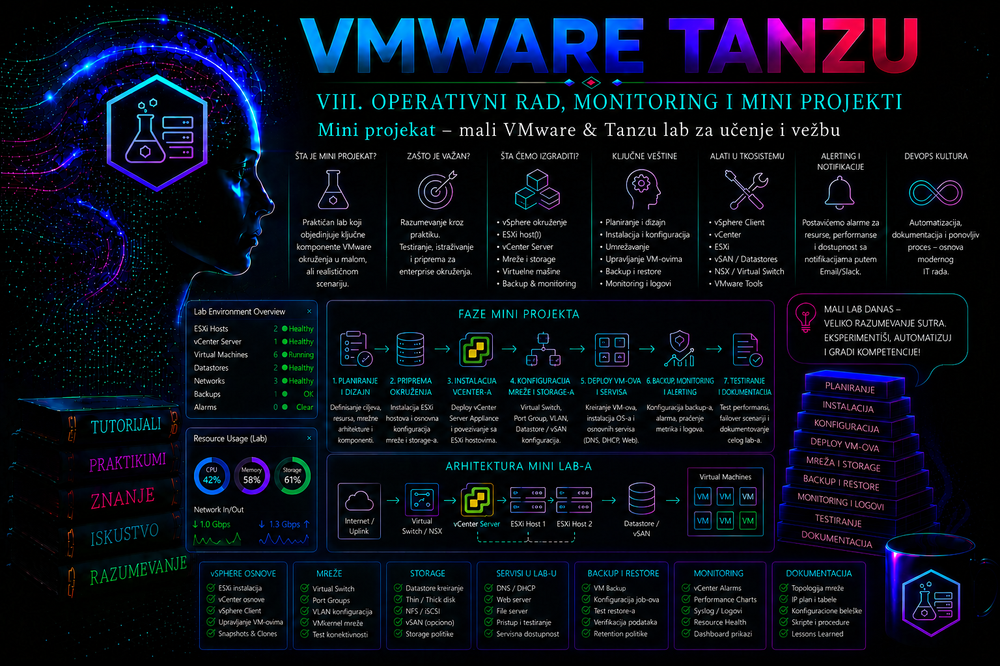

VMware & Tanzu

Projektni scenario
Kompanija „Aurora Systems” razvija interne poslovne aplikacije i želi da pripremi mali, kontrolisan VMware i Tanzu laboratorijski sistem u kojem administratori mogu bezbedno da uče, testiraju promene i vežbaju operativne postupke pre nego što ih primene u produkcionom okruženju. Produkciona infrastruktura kompanije zasnovana je na VMware Cloud Foundation platformi, dok se novi aplikativni servisi postepeno premeštaju sa klasičnih virtuelnih mašina na Kubernetes workload-e.
Dosadašnja obuka administratora obavljana je na nepovezanim virtuelnim mašinama i lokalnim Kubernetes instalacijama. Takvo okruženje omogućavalo je učenje pojedinačnih komandi, ali nije prikazivalo stvarnu vezu između vSphere infrastrukture, Supervisor okruženja, VMware vSphere Kubernetes Service klastera, mreže, persistent storage-a, bezbednosnih pravila, monitoringa i procesa oporavka.
Uprava IT sektora zato zahteva formiranje trajnog laboratorijskog okruženja pod nazivom LAB-TANZU-01. Lab mora da bude dovoljno mali da ne troši resurse produkcionog kapaciteta, ali dovoljno funkcionalan da administrator u njemu može da prođe kompletan životni ciklus jedne aplikacije: od kreiranja namespace-a i Kubernetes klastera, preko deployment-a i povezivanja storage-a, do praćenja rada, kontrolisanog izazivanja kvara, troubleshooting-a, recovery postupka i dokumentovanja konačnog stanja.
Projekat se izvodi u verzijskom kontekstu VMware Cloud Foundation 9.1, vSphere Supervisor 9.1 i aktuelne kompatibilne verzije VMware vSphere Kubernetes Service, u daljem tekstu VKS. Pre implementacije administrator mora da proveri tačnu VKS verziju dostupnu u internom content katalogu, matricu kompatibilnosti i release notes. Konkretna Kubernetes verzija zato se neće unositi proizvoljno, već će se evidentirati nakon provere dostupnih i podržanih izdanja.
Poslovni zahtev i očekivana vrednost laboratorije
Primarni poslovni zahtev jeste da se administratorima obezbedi ponovljivo okruženje u kojem greška ne ugrožava produkciju. Lab treba da omogući proveru novih manifesta, image-a, mrežnih pravila, StorageClass objekata, pristupnih privilegija i operativnih procedura pre njihovog odobravanja za viša okruženja.
Projekat nije zamišljen kao demonstracioni klaster koji se pokrene jednom i zatim ostavi bez održavanja. LAB-TANZU-01 mora imati definisan inventar, vlasništvo, pravila pristupa, procedure za uključivanje i isključivanje, osnovni monitoring, evidenciju promena i tačke povratka. Time se laboratorija koristi i za tehničku obuku i za uvežbavanje administratorske discipline koja se očekuje u produkciji.
U okviru projekta biće postavljena mala aplikacija tanzu-lab-app. Aplikacija predstavlja jednostavan interni servis sa web komponentom i persistent prostorom za testne podatke. Ona nema poslovno osetljive informacije i ne povezuje se sa produkcionim bazama, ali mora da koristi obrasce koji su relevantni za enterprise okruženje:
- deployment sa najmanje dve replike;
- interni Kubernetes Service;
- kontrolisanu pristupnu tačku za test korisnike;
- readiness, liveness i startup provere;
- PersistentVolumeClaim za trajne testne podatke;
- ConfigMap za nekritičnu konfiguraciju;
- Secret za poverljive testne vrednosti;
- ServiceAccount sa minimalnim privilegijama;
- NetworkPolicy pravila za ograničavanje komunikacije;
- resource requests i limits;
- oznake i anotacije koje omogućavaju praćenje vlasništva i namene resursa.
Uspešno realizovan projekat treba da pokaže da se VMware infrastruktura i Kubernetes platforma ne administriraju kao dva nepovezana sistema. Kapacitet vSphere klastera, storage politika, mrežni segmenti, load balancing, namespace dozvole, Kubernetes resursi i aplikativni zahtevi čine jedan operativni lanac. Problem u bilo kom njegovom delu može uticati na raspoređivanje podova, dodelu volumena, dostupnost servisa ili sposobnost administratora da izvrši recovery.
Početno stanje
Kompanija već poseduje izdvojeni razvojni workload domain sa tri ESXi hosta i vCenter Server sistemom. Supervisor je omogućen na vSphere klasteru, ali namenski namespace, VKS klaster i aplikativni resursi za ovu laboratoriju još ne postoje.
Postojeće infrastrukturne komponente održava platform tim. Projektni administrator nema zadatak da instalira ESXi, vCenter Server ili kompletnu VMware Cloud Foundation platformu od početka. Njegov zadatak je da proveri spremnost dostupne infrastrukture, zatraži ili pripremi potrebne mrežne i storage resurse, formira namenski Supervisor namespace, kreira VKS klaster i zatim implementira i operativno potvrdi aplikativno okruženje.
Na početku projekta poznato je sledeće stanje:
- vCenter Server vcsa01.lab.aurora.local dostupan je na adresi 10.50.10.10;
- vSphere klaster CL-TANZU-LAB sadrži tri ESXi hosta;
- Supervisor SUP-TANZU-LAB ima status Ready;
- NSX mrežni servisi i load balancing dostupni su Supervisor okruženju;
- centralni DNS i NTP servisi dostupni su laboratorijskoj zoni;
- vSphere CSI integracija dostupna je za dinamičko obezbeđivanje persistent volumena;
- centralni registry postoji, ali repozitorijum aplikacije još nije kreiran;
- centralni sistem za logove može da primi logove sa administrativnog bastion sistema i Kubernetes workload-a;
- ne postoji odobrena konfiguracija za LAB-TANZU-01;
- ne postoje stvarni korisnički, produkcioni ni lični podaci namenjeni ovoj laboratoriji.
Administrator ne sme pretpostaviti da je komponenta upotrebljiva samo zato što postoji u inventaru. Pre svake implementacije moraju se proveriti zdravstveno stanje vSphere klastera, raspoloživ kapacitet, status Supervisor komponenti, dostupne Kubernetes verzije, storage politike, mrežne zavisnosti, sertifikati, DNS rezolucija i vremenska sinhronizacija.
Ciljano stanje
Na kraju projekta mora postojati funkcionalan i dokumentovan VKS klaster vks-lab-01 unutar Supervisor namespace-a ns-tanzu-lab. Klaster će služiti isključivo za obuku, testiranje i kontrolisane incidente.
U VKS klasteru biće kreirana dva aplikativna namespace-a:
- lab-dev za implementaciju i svakodnevne vežbe;
- lab-ops za monitoring, administrativne pomoćne resurse i kontrolisane operativne provere.
Aplikacija tanzu-lab-app biće implementirana u namespace-u lab-dev. Njena komunikacija biće ograničena tako da podovi nisu proizvoljno dostupni iz svih namespace-ova. Persistent podaci čuvaće se na volumenu dinamički obezbeđenom preko odobrene vSphere storage politike. Poverljive vrednosti neće se nalaziti u image-u, Git repozitorijumu niti običnom ConfigMap objektu.
Administratorski pristup odvajaće infrastrukturne i Kubernetes odgovornosti. Platform administrator upravlja Supervisor namespace-om, kvotama i infrastrukturnim zavisnostima. Kubernetes administrator upravlja VKS klasterom i njegovim resursima. Aplikativni operator dobija ograničena prava samo u namespace-u lab-dev.
Svi ključni koraci biće izvedeni sa administrativnog bastion sistema ops01.lab.aurora.local, sa adresom 10.50.10.20. Na njemu će biti instalirani podržani CLI alati, uključujući odgovarajući Kubernetes CLI, VMware CLI dodatke kada su potrebni, Git i alat za rad sa image registry servisom.
Projektni zahtevi
Funkcionalni zahtevi
- Supervisor namespace ns-tanzu-lab mora biti kreiran i povezan sa odgovarajućim compute, storage i mrežnim resursima.
- VKS klaster vks-lab-01 mora imati tri control plane čvora radi laboratorijske simulacije visoke dostupnosti control plane sloja.
- Klaster mora imati tri worker čvora kako bi se vežbali raspoređivanje podova, održavanje čvorova i reakcija na nedostupan node.
- Aplikacija tanzu-lab-app mora imati najmanje dve funkcionalne replike.
- Aplikacija mora ostati dostupna kada se jedna aplikativna replika kontrolisano ukloni.
- Persistent podaci moraju ostati dostupni nakon ponovnog kreiranja aplikativnog poda, u granicama pristupnog režima izabranog volumena.
- NetworkPolicy mora ograničiti ulazni i izlazni saobraćaj na dokumentovane tokove.
- RBAC mora sprečiti aplikativnog operatora da menja cluster-wide objekte.
- Monitoring mora omogućiti proveru čvorova, podova, deployment-a, servisa, volumena, događaja i potrošnje resursa.
- Administrator mora izvršiti kontrolisan incident i dokumentovati recovery.
Zahtevi dostupnosti
Ovo nije produkciono okruženje i nema formalni SLA, ali se zahteva da njegova arhitektura podrži učenje osnovnih mehanizama raspoloživosti. Control plane se zato projektuje sa tri čvora, aplikacija sa najmanje dve replike, a podovi moraju biti raspoređeni tako da gubitak jednog worker čvora ne ukloni sve aplikativne instance.
Dostupnost laboratorije ne podrazumeva neprekidan rad tokom cele godine. Okruženje može biti planski isključeno radi uštede resursa, ali samo prema dokumentovanoj proceduri koja potvrđuje da nema aktivnih vežbi, nezavršenih backup poslova ili recovery operacija.
Zahtevi performansi i kapaciteta
Laboratorija nije namenjena testiranju maksimalnih performansi. Zahteva se stabilan rad malog skupa workload-a i dovoljno slobodnih resursa za simulaciju skaliranja. Početni kapacitet mora omogućiti rad šest VKS virtuelnih mašina, aplikativnih podova, sistemskih komponenti i najmanje 25% rezerve unutar dodeljene kvote.
Pragovi upozorenja neće biti proglašeni univerzalnim vrednostima. Tokom operativne validacije formiraće se početna bazna linija za CPU, memoriju, storage latenciju, potrošnju volumena, restartovanje kontejnera i vreme odziva aplikacije. Alarmne vrednosti zatim se podešavaju prema izmerenom ponašanju i realnom kapacitetu laboratorije.
Zahtevi za monitoring i logove
Administrator mora imati mogućnost da poveže infrastrukturni i Kubernetes pogled na problem. Za svaki incident proveravaju se vCenter događaji i alarmi, status Supervisor i VKS objekata, Kubernetes događaji, stanje node-ova, stanje podova, logovi aplikacije, stanje persistent volumena i poslednje evidentirane promene.
Logovi koji su važni za analizu ne smeju zavisiti samo od životnog ciklusa jednog kontejnera. Aplikativni i relevantni audit zapisi treba da budu prosleđeni u odobreni centralni logging sistem kada je integracija dostupna. Lokalni pristup komandom za pregled logova ostaje prvi dijagnostički korak, ali nije zamena za centralno čuvanje i pretraživanje.
Zahtevi za backup, recovery i rollback
Projektna dokumentacija, manifesti, bezbednosne politike i konfiguracije moraju se čuvati u internom Git repozitorijumu git.aurora.local/platform/lab-tanzu-01. Git istorija predstavlja kontrolisanu tačku povratka za deklarativnu konfiguraciju, ali ne predstavlja backup persistent podataka.
Za aplikativni namespace biće pripremljena Velero backup politika prema mogućnostima i podržanim integracijama konkretnog VKS izdanja. Pre oslanjanja na snapshot persistent volumena administrator mora proveriti podršku storage sistema, CSI snapshot funkcionalnosti, retention pravila i mogućnost stvarnog restore postupka.
Snapshot virtuelne mašine ne koristi se kao univerzalna zamena za backup. Posebno se ne projektuje nekontrolisano pravljenje snapshot-a svih VKS čvorova kao metod oporavka klastera. Recovery Kubernetes workload-a zasniva se na deklarativnoj konfiguraciji, potvrđenom backup-u aplikativnih resursa i odgovarajućem backup-u podataka.
Pretpostavke i ograničenja
Pretpostavke
- Supervisor je pravilno implementiran i podržan za korišćenu VCF verziju.
- NSX mrežna infrastruktura i load balancing servis imaju dovoljan slobodan kapacitet.
- DNS i NTP servisi dostupni su sa svih relevantnih mrežnih segmenata.
- Registry sertifikat može biti validiran iz VKS klastera.
- Storage politika podržava dinamičko kreiranje volumena potrebne klase.
- Platform tim može odobriti potrebne kvote i mrežne raspone.
- Administrator poseduje odvojeni nalog za privilegovane aktivnosti.
- Svi korišćeni image-i potiču iz odobrenog registry servisa.
- Lab ne koristi produkcione tajne, privatne ključeve ni podatke korisnika.
Ograničenja
- Ukupan dodeljeni kapacitet namespace-a ograničen je na 24 vCPU i 96 GB memorije.
- Za persistent workload-e dostupno je najviše 500 GB prostora.
- Dozvoljeno je najviše pet eksternih load balancer adresa.
- Direktan pristup ESXi hostovima nije deo svakodnevnog rada projektne grupe.
- Promene globalne NSX konfiguracije izvodi mrežni tim kroz odobren zahtev.
- Lab nema direktnu rutiranu vezu ka produkcionim bazama i servisima.
- Javni image registry servisi ne koriste se direktno iz klastera.
- Verzija VKS klastera mora biti iz zvanično dostupnog i kompatibilnog kataloga.
- Automatski upgrade neće se uključiti bez prethodno testiranog backup i rollback plana.
Inventar komponenti
| Objekat | Naziv | Uloga | Početno stanje |
|---|---|---|---|
| vCenter Server | vcsa01.lab.aurora.local | Centralno upravljanje vSphere infrastrukturom | Postoji |
| vSphere klaster | CL-TANZU-LAB | Compute resursi za Supervisor i VKS workload-e | Postoji |
| Supervisor | SUP-TANZU-LAB | IaaS control plane i platforma za VKS klastere | Postoji |
| Supervisor namespace | ns-tanzu-lab | Izolacija, kvote, dozvole i infrastrukturne politike laba | Kreira se |
| VKS klaster | vks-lab-01 | Kubernetes okruženje za aplikacije i vežbe | Kreira se |
| Kubernetes namespace | lab-dev | Aplikativni workload-i | Kreira se |
| Kubernetes namespace | lab-ops | Operativni alati i provere | Kreira se |
| Bastion sistem | ops01.lab.aurora.local | Kontrolisana administratorska pristupna tačka | Postoji, priprema se |
| Image registry | registry.lab.aurora.local | Čuvanje odobrenih kontejnerskih slika | Postoji |
| Git servis | git.aurora.local | Verzionisanje manifesta i dokumentacije | Postoji |
| DNS servis | dns01.lab.aurora.local | Interna rezolucija imena | Postoji |
| NTP servis | ntp01.lab.aurora.local | Vremenska sinhronizacija | Postoji |
| Logging servis | logs01.lab.aurora.local | Centralno čuvanje i pretraživanje logova | Postoji |
Logička topologija
LAB-TANZU-01 koristi postojeći Supervisor kao infrastrukturnu kontrolnu ravan, dok se korisnički workload-i izvršavaju u namenskom VKS klasteru. Administratorski pristup dozvoljen je preko bastion sistema. Image-i se preuzimaju samo iz internog registry servisa, a manifesti se čuvaju u internom Git repozitorijumu.
Administrator
|
| HTTPS / SSH
v
ops01.lab.aurora.local
|
+-------------------> vcsa01.lab.aurora.local
|
+-------------------> SUP-TANZU-LAB
|
v
ns-tanzu-lab
|
v
vks-lab-01
/ | \
/ | \
control-plane workers Kubernetes API
|
+-----------+-----------+
| |
lab-dev lab-ops
|
tanzu-lab-app
/ | \
Service NetworkPolicy PVC
| |
Load Balancer vSphere CSI
|
DS-TANZU-CAPACITYTopologija namerno ne uvodi dodatne baze, message broker servise ili service mesh. Oni mogu biti predmet kasnijeg proširenja, ali nisu potrebni da bi se proverile osnovne administratorske kompetencije obuhvaćene ovim projektom.
Mrežni plan
| Segment | VLAN | Adresni opseg | Namena |
|---|---|---|---|
| LAB-MGMT | 510 | 10.50.10.0/24 | vCenter, bastion, DNS, NTP i upravljački pristup |
| LAB-VKS-NODES | 520 | 10.50.20.0/24 | VKS control plane i worker čvorovi |
| LAB-INGRESS | 530 | 10.50.30.0/24 | Load balancer adrese aplikativnih servisa |
| Pod mreža | Nije primenljivo | 172.20.0.0/16 | Pod adrese unutar VKS mrežnog modela |
| Service mreža | Nije primenljivo | 172.21.0.0/16 | ClusterIP adrese Kubernetes servisa |
Pod i Service opsezi moraju biti jedinstveni i ne smeju se preklapati sa fizičkim mrežama, VPN opsezima, drugim klasterima ili rutama koje laboratorija koristi. Pre implementacije mrežni tim potvrđuje odsustvo preklapanja. Promena ovih vrednosti nakon formiranja klastera može zahtevati ponovno kreiranje klastera, pa se provera obavlja pre prvog deployment-a.
Firewall pravila zasnivaju se na dozvoljenim tokovima. Bastion pristupa vCenter i Kubernetes API servisima preko HTTPS protokola. VKS čvorovi pristupaju internom DNS, NTP, registry, Git, logging i backup odredištu samo na potrebnim portovima. Direktna komunikacija sa produkcionim mrežama nije dozvoljena.
Kubernetes NetworkPolicy primenjuje se dodatno unutar klastera. Ona ne zamenjuje NSX segmentaciju i firewall kontrole, već ograničava komunikaciju na nivou podova i namespace-ova. Pre oslanjanja na NetworkPolicy proverava se da korišćeni CNI i mrežni model zaista sprovode definisana pravila.
Storage plan
Za VKS virtuelne mašine koristi se postojeći datastore DS-TANZU-CAPACITY. Na Supervisor namespace biće dodeljena storage politika SP-TANZU-GOLD, koja predstavlja odobrenu politiku za persistent volumene laboratorije.
| Storage objekat | Namena | Planirani kapacitet | Napomena |
|---|---|---|---|
| DS-TANZU-CAPACITY | VKS virtuelne mašine i persistent volumeni | Postojeći deljeni kapacitet | Pre deployment-a proveriti slobodan prostor i stanje datastore-a |
| SP-TANZU-GOLD | Dinamičko obezbeđivanje volumena | Kvota 500 GB | Dodeljuje se namespace-u ns-tanzu-lab |
| tanzu-lab-data | PVC aplikacije | 20 GB | Početni kapacitet; proširenje samo nakon provere podrške |
Aplikacija koristi persistent volumen kapaciteta 20 GB. Izbor pristupnog režima mora odgovarati načinu rada aplikacije i mogućnostima CSI drajvera. Više replika aplikacije ne znači automatski da isti blok volumen može bezbedno istovremeno da se montira na više čvorova. Zato će aplikativni dizajn odvojiti stateless web replike od komponente koja zapisuje testne podatke ili koristiti podržan način pristupa koji ne ugrožava integritet podataka.
Pre deployment-a administrator proverava koje StorageClass objekte VKS klaster dobija iz dodeljenih vSphere storage politika. Naziv StorageClass objekta neće se unapred izmišljati, jer može zavisiti od načina publikovanja politike u konkretnoj verziji platforme. Stvarni naziv biće evidentiran u izvedenoj dokumentaciji.
Plan kapaciteta VKS klastera
| Grupa čvorova | Broj čvorova | Početna veličina po čvoru | Namena |
|---|---|---|---|
| Control plane | 3 | 2 vCPU, 8 GB RAM | Kubernetes control plane servisi |
| Worker | 3 | 4 vCPU, 16 GB RAM | Aplikativni i operativni workload-i |
Konačne VM klase moraju biti izabrane iz klasa koje su stvarno dostupne u Supervisor namespace-u. Ako odgovarajuća klasa ne postoji, administrator ne kreira proizvoljnu novu klasu bez procene uticaja, već usaglašava zahtev sa platform timom.
Projektovana veličina zahteva ukupno približno 18 vCPU i 72 GB memorije za VKS čvorove. Preostali namespace kapacitet čini rezervu za pomoćne objekte, kratkotrajno skaliranje i operativne vežbe. Rezerva ne sme biti potrošena trajnim workload-ima bez izmene dokumentovanog plana kapaciteta.
Projektantske odluke
Izbor VKS klastera umesto nepovezanog lokalnog Kubernetes sistema
Lokalni Kubernetes alati bili bi jednostavniji i zahtevali bi manje infrastrukturnih resursa. Ipak, ne bi prikazali integraciju sa Supervisor namespace-om, vSphere VM klasama, storage politikama, CSI provisioning-om, NSX mrežom, enterprise pristupom i vCenter monitoringom. Pošto je cilj obuka za VMware i Tanzu administraciju, izabran je VKS klaster.
Jedan klaster sa odvojenim namespace-ovima
Moguće je kreirati poseban klaster za razvojne i operativne vežbe, ali bi to nepotrebno povećalo potrošnju resursa. Jedan klaster sa namespace izolacijom dovoljan je za ovaj projekat, pod uslovom da su RBAC, ResourceQuota i NetworkPolicy pravilno primenjeni.
Tri control plane i tri worker čvora
Jedan control plane i jedan worker čvor bili bi jeftiniji, ali ne bi omogućili realno vežbanje održavanja čvora, raspoređivanja replika i osnovne raspoloživosti. Tri control plane čvora koriste se radi simulacije redundantne kontrolne ravni, dok tri worker čvora omogućavaju bezbedno uklanjanje jednog čvora iz rada bez gubitka celog aplikativnog servisa.
Interni registry kao jedini izvor image-a
Direktno preuzimanje image-a sa javnih registry servisa bilo bi brže za početak rada, ali bi smanjilo kontrolu nad poreklom, verzijom i dostupnošću image-a. Projekat zato koristi registry.lab.aurora.local. Image mora biti označen nepromenljivom verzijom ili digest vrednošću; oznaka latest neće se koristiti za kontrolisani deployment.
Deklarativna konfiguracija u Git repozitorijumu
Ručno kreiranje svih objekata kroz pojedinačne CLI komande otežalo bi ponavljanje, pregled promena i rollback. Manifesti se zato čuvaju u Git repozitorijumu, a imperativne komande koriste se prvenstveno za proveru, dijagnostiku i jasno ograničene administrativne intervencije.
Bezbednosni koncept
Bezbednost laboratorije projektuje se prema istim principima kao produkciona infrastruktura, iako su podaci testni. Lab ne sme postati zaobilazni put ka drugim sistemima niti mesto na kojem se dele administratorski nalozi i tajne.
Nalozi i odgovornosti
| Nalog ili grupa | Uloga | Obim pristupa |
|---|---|---|
| grp-vsphere-platform-admins | Platform administracija | vSphere, Supervisor, namespace kvote i infrastrukturne politike |
| grp-vks-cluster-admins | Kubernetes administracija | Administracija klastera vks-lab-01 |
| grp-lab-app-operators | Aplikativni operator | Ograničene izmene unutar namespace-a lab-dev |
| sa-tanzu-lab-app | ServiceAccount aplikacije | Samo dozvole neophodne aplikaciji |
Dnevni korisnički nalozi ne koriste se za privilegovane platform aktivnosti. Administratorske sesije pokreću se sa namenskim privilegovanim identitetom i evidentiraju u skladu sa internim pravilima. Zajednički administrator nalozi nisu dozvoljeni.
Upravljanje tajnama
Lozinke, tokeni i privatni ključevi ne smeju se upisivati u Git, image, ConfigMap, dokumentaciju ili izlaze komandi koji se arhiviraju. U projektnim primerima poverljive vrednosti označavaju se kao [TAJNA VREDNOST NIJE PRIKAZANA].
Kubernetes Secret nije dovoljan sam po sebi da reši kompletno upravljanje tajnama. Administrator mora kontrolisati ko može da čita Secret objekte, ko može da kreira podove koji ih montiraju i kako se obavlja rotacija. Ako je u organizaciji dostupan centralni secrets manager, kasnije proširenje projekta treba da integriše aplikaciju sa njim.
Pod bezbednost
Kontejneri se projektuju kao neprivilegovani, sa zabranjenom eskalacijom privilegija, read-only root filesystem-om kada aplikacija to podržava i eksplicitno definisanim korisničkim identitetom. Host mreža, host PID, host IPC, privileged režim i nekontrolisani hostPath volumeni nisu dozvoljeni za aplikaciju.
Mrežna zaštita
Početna NetworkPolicy strategija zasniva se na podrazumevanoj zabrani ulaznog i izlaznog saobraćaja u namespace-u lab-dev, nakon čega se dodaju precizne dozvole za DNS, aplikativne tokove, monitoring i odobrene eksterne servise. Pravila se uvode postepeno i proveravaju posle svake promene kako se ne bi izgubila dijagnostička vidljivost.
Kriterijumi prihvatanja
| Kriterijum | Način buduće provere | Očekivani rezultat |
|---|---|---|
| Supervisor namespace je pravilno konfigurisan | Pregled compute, storage, mrežnih i permission postavki | ns-tanzu-lab ima odobrene kvote, politike i korisnike |
| VKS klaster je operativan | Provera statusa klastera, API pristupa i node-ova | Svi control plane i worker čvorovi imaju očekivani status |
| Aplikacija je dostupna | Test kroz odobrenu pristupnu tačku | Servis vraća očekivani odgovor |
| Replike obezbeđuju osnovnu raspoloživost | Kontrolisano uklanjanje jednog poda | Servis ostaje dostupan i replika se ponovo kreira |
| Persistent podaci preživljavaju restart poda | Upis testa, ponovno kreiranje poda i ponovno čitanje | Testni podatak ostaje dostupan |
| NetworkPolicy sprovodi ograničenja | Dozvoljeni i zabranjeni testovi komunikacije | Dozvoljeni tokovi rade, ostali su blokirani |
| RBAC sprovodi najmanje privilegije | Autorizacioni testovi za svaku ulogu | Operator ne može da menja cluster-wide resurse |
| Monitoring i logovi podržavaju troubleshooting | Prikupljanje događaja, metrika i logova tokom incidenta | Uzrok problema može se dokazati, a ne nagađati |
| Recovery postupak je potvrđen | Kontrolisan oporavak nakon simuliranog kvara | Sistem se vraća u stabilno i provereno stanje |
| Konfiguracija je ponovljiva | Poređenje Git repozitorijuma i izvedenih objekata | Manifesti i dokumentacija odgovaraju stvarnom stanju |
Plan implementacije
- Proveriti verzije, release notes, interoperabilnost i dostupne VKS image-e.
- Potvrditi stanje vSphere klastera, Supervisor komponenti, datastore-a, mreže, DNS-a, NTP-a i sertifikata.
- Pripremiti bastion sistem i proveriti instalirane CLI alate.
- Kreirati Git repozitorijum i početnu strukturu direktorijuma.
- Kreirati Supervisor namespace ns-tanzu-lab.
- Dodeliti kvote, VM klase, storage politiku i korisničke dozvole.
- Kreirati VKS klaster vks-lab-01.
- Potvrditi zdravlje klastera, node-ova, sistemskih podova i storage integracije.
- Kreirati namespace-e lab-dev i lab-ops.
- Primeniti ResourceQuota, LimitRange, RBAC i osnovne bezbednosne politike.
- Pripremiti i proveriti aplikativni image u internom registry servisu.
- Implementirati ConfigMap, Secret, ServiceAccount, PVC, Deployment i Service.
- Primeniti NetworkPolicy pravila i potvrditi dozvoljene tokove.
- Povezati monitoring, logove i backup konfiguraciju.
- Izvršiti funkcionalnu i operativnu validaciju.
- Simulirati kontrolisan incident, izvršiti troubleshooting i recovery.
- Uporediti konačno stanje sa kriterijumima prihvatanja i ažurirati dokumentaciju.
Plan validacije
Validacija se neće obaviti samo na kraju. Posle svake infrastrukturne ili aplikativne faze postoji kontrolna tačka. Time se izbegava situacija u kojoj administrator istovremeno pokušava da dijagnostikuje više nepovezanih promena.
- Posle konfiguracije namespace-a proveravaju se kvote, VM klase, storage politike i prava pristupa.
- Posle kreiranja VKS klastera proveravaju se status klastera, node-ovi, sistemski podovi, DNS i API pristup.
- Posle kreiranja PVC-a proveravaju se StorageClass, binding, vSphere volumen i mogućnost montiranja.
- Posle deployment-a proveravaju se rollout status, probe, replike, događaji i logovi.
- Posle kreiranja Service objekta proverava se dostupnost sa dozvoljenog izvora.
- Posle NetworkPolicy pravila testiraju se i dozvoljeni i zabranjeni tokovi.
- Posle RBAC konfiguracije izvršavaju se autorizacioni testovi za svaku definisanu ulogu.
- Posle backup posla proverava se rezultat, sadržaj backup-a i mogućnost kontrolisanog restore testa.
- Posle incidenta ponavlja se kompletna funkcionalna i operativna provera pogođenih komponenti.
Plan rollback-a i recovery-ja
Rollback se pokreće kada nova promena izazove problem koji se ne može bezbedno otkloniti u prihvatljivom vremenu ili kada rezultat validacije odstupa od odobrenog stanja. Recovery se pokreće kada je funkcionalnost izgubljena zbog kvara, greške ili nedostupnosti komponente.
Tačke povratka projekta čine:
- odobreni Git commit pre svake veće promene;
- sačuvani izlazi važnih statusnih provera bez tajnih vrednosti;
- export relevantnih deklarativnih Kubernetes objekata;
- potvrđen backup aplikativnog namespace-a;
- dokumentovana prethodna verzija image-a;
- evidencija prethodnih kvota, mrežnih pravila i RBAC veza.
Rollback aplikativnog deployment-a može vratiti prethodni manifest ili prethodnu proverenu image verziju. Rollback NetworkPolicy promene vraća poslednji odobreni skup pravila. Rollback RBAC promene uklanja novu vezu ili vraća prethodno pravilo, ali tek nakon procene da li aktivni proces zavisi od novoformirane dozvole.
Brisanje i ponovno kreiranje čitavog VKS klastera nije prvi odgovor na pojedinačni aplikativni problem. Takav postupak primenjuje se samo kada je klaster nepopravljivo oštećen, kada je recovery aplikativnih resursa potvrđen i kada postoji odobren plan ponovnog formiranja infrastrukture.
Identifikovani rizici
| Rizik | Uticaj | Preventivna mera |
|---|---|---|
| Preklapanje mrežnih opsega | Nedostupnost podova, servisa ili eksternih sistema | Formalna provera IP plana pre kreiranja klastera |
| Nedovoljna namespace kvota | VKS čvorovi ili podovi ostaju bez potrebnih resursa | Plan kapaciteta i najmanje 25% rezerve |
| Nepodržana kombinacija verzija | Neuspešan deployment ili nestabilan rad | Provera release notes, kataloga i kompatibilnosti |
| Nepouzdan registry sertifikat | ImagePullBackOff i neuspešan rollout | Provera lanca poverenja pre deployment-a aplikacije |
| Preširoke RBAC privilegije | Neovlašćene promene i eskalacija privilegija | Namespace Role umesto nepotrebnog ClusterRole pristupa |
| Pogrešna NetworkPolicy | Prekid aplikativne, DNS ili monitoring komunikacije | Postepena primena, test matrica i spreman rollback |
| Oslanjanje na snapshot umesto backup-a | Nemoguć potpun oporavak podataka | Odvojena backup i restore procedura sa testom oporavka |
| Korišćenje promenljive image oznake | Nepredvidiv deployment i težak rollback | Fiksna verzija ili digest image-a |
| Gubitak administratorskog pristupa | Nemogućnost intervencije tokom incidenta | Odvojene uloge, break-glass procedura i audit |
| Nedovoljna evidencija promena | Produžen troubleshooting i nejasan uzrok problema | Git istorija, change zapis i kontrolne tačke |
Preduslovi za implementaciju
Implementacija može početi tek kada su potvrđeni sledeći preduslovi:
- odobren je projekat LAB-TANZU-01 i imenovani su tehnički vlasnici;
- potvrđena je verzija VCF, Supervisor i dostupna VKS izdanja;
- vSphere klaster nema aktivne kritične alarme;
- Supervisor i njegove zavisne komponente imaju očekivano zdravstveno stanje;
- postoje dovoljni CPU, memorijski i storage resursi;
- mrežni opsezi ne preklapaju se sa postojećim mrežama;
- DNS zapisi i vremenska sinhronizacija funkcionišu;
- registry, Git, logging i backup odredišta dostupni su iz laboratorijske zone;
- sertifikati su važeći i njihovi lanci poverenja poznati su klijentskim sistemima;
- odobrene su potrebne firewall komunikacije;
- administratorske grupe i odvojeni privilegovani nalozi postoje;
- bastion sistem je ažuriran i zaštićen;
- Git repozitorijum je kreiran bez tajnih podataka;
- definisani su prozor implementacije, kriterijumi prekida i odgovorne osobe za eskalaciju.
Faza 2: implementacija laboratorije
Ova faza prevodi odobreni dizajn u proverljivo stanje. Svaka promena izvodi se tek posle read-only provere, evidentira se i završava lokalnom kontrolnom tačkom pre prelaska na sledeću zavisnost.
Kontrolisani početak implementacije
Implementacija počinje tek nakon potvrde svih preduslova definisanih u projektnoj fazi. Administrator ne kreira VKS klaster dok postoje nerešeni kritični alarmi, nepoznato stanje datastore-a, nepotvrđeni mrežni opsezi ili neusklađena verzija Kubernetes izdanja. Cilj prvog implementacionog koraka nije promena infrastrukture, već formiranje dokazivog početnog stanja sa kojim će se kasnije porediti rezultat svake promene.
Sve administratorske komande izvršavaju se sa sistema ops01.lab.aurora.local. Za pristup vCenter Server sistemu koristi se namenski privilegovani nalog člana grupe grp-vsphere-platform-admins, dok se za rad unutar VKS klastera koristi nalog iz grupe grp-vks-cluster-admins. Poverljive vrednosti ne unose se u shell istoriju, manifest koji se čuva u Git-u niti u izlaz koji se prilaže evidenciji promene.
Pre prve promene kreira se evidencioni zapis sa oznakom CHG-LAB-TANZU-01-001. Zapis sadrži datum, izvršioca, odobrenje, planirane objekte, početno stanje, kriterijume uspeha, kriterijume prekida i referencu na Git commit. Na taj način tehnički postupak ostaje povezan sa administrativnom odgovornošću.
Priprema administratorskog bastion sistema
Bastion sistem mora imati pouzdanu DNS rezoluciju, vremensku sinhronizaciju i validan lanac poverenja za sertifikate internih servisa. Na njemu se pripremaju Git, odgovarajući Kubernetes CLI, VMware CLI dodatak koji odgovara Supervisor okruženju, alat za pristup registry servisu i pomoćni alati za proveru mreže i TLS komunikacije.
Administrator najpre proverava identitet sistema, vreme i rezoluciju svih zavisnih servisa. Komande se izvršavaju pod ličnim administrativnim nalogom sa pravom korišćenja potrebnih alata, ali bez trajnog rada kao korisnik root.
hostnamectl
timedatectl status
getent hosts vcsa01.lab.aurora.local
getent hosts registry.lab.aurora.local
getent hosts git.aurora.local
getent hosts logs01.lab.aurora.local
getent hosts ntp01.lab.aurora.local
curl --fail --silent --show-error \
https://vcsa01.lab.aurora.local/ \
--output /dev/null
curl --fail --silent --show-error \
https://registry.lab.aurora.local/v2/ \
--output /dev/nullUspešna DNS provera mora vratiti očekivane interne adrese. HTTPS provera može vratiti odgovor koji zahteva autentikaciju, što je prihvatljivo; neprihvatljivi su greška rezolucije, istekli sertifikat, nepoznat izdavalac sertifikata ili timeout. Privremeno korišćenje opcije koja isključuje TLS proveru nije dozvoljeno kao trajno rešenje. Ako lanac poverenja nije poznat bastion sistemu, administratorski tim instalira odobreni interni CA sertifikat i zatim ponavlja proveru.
Verzije alata evidentiraju se pre rada:
git --version
kubectl version --client=true
openssl version
curl --version
Verzija komande kubectl mora biti kompatibilna sa Kubernetes verzijom koja će biti korišćena. Administrator ne pretpostavlja da najnoviji lokalno instalirani klijent automatski odgovara svakom VKS izdanju, već proverava podržano odstupanje klijentske i serverske verzije.
Priprema Git repozitorijuma i strukture projekta
Deklarativna konfiguracija čuva se u repozitorijumu git.aurora.local/platform/lab-tanzu-01. Repozitorijum se ne koristi samo kao skladište YAML datoteka, već kao evidencija odobrenih promena i tačka povratka za konfiguraciju.
Na bastion sistemu kreira se radna kopija i dosledna struktura direktorijuma:
mkdir -p ~/projects
cd ~/projects
git clone https://git.aurora.local/platform/lab-tanzu-01.git
cd lab-tanzu-01
mkdir -p \
supervisor \
cluster \
namespaces/lab-dev \
namespaces/lab-ops \
application/base \
application/network \
application/rbac \
operations \
documentation
cat > .gitignore <<'EOF'
*.kubeconfig
*.token
*.key
*.p12
*.pfx
*.crt.tmp
secrets/
.local/
EOF
git add .
git commit -m "Initialize LAB-TANZU-01 repository structure"
git push origin mainDatoteke kubeconfig, tokeni i privatni ključevi izričito su isključeni iz repozitorijuma. Ako je poverljiva vrednost ranije slučajno dodata u commit, njeno uklanjanje iz poslednje verzije nije dovoljno. Vrednost se odmah rotira, incident se evidentira, a Git istorija obrađuje prema pravilima organizacije.
Provera infrastrukturne spremnosti
Pre kreiranja namespace-a administrator u vSphere Client-u proverava klaster CL-TANZU-LAB, Supervisor SUP-TANZU-LAB i datastore DS-TANZU-CAPACITY. Pregled obuhvata aktivne alarme, stanje ESXi hostova, raspoloživi CPU i memoriju, datastore kapacitet i latenciju, status mrežnih zavisnosti i zdravstveno stanje Supervisor kontrolne ravni.
Za automatizovanu dopunsku proveru može se koristiti PowerCLI sa administratorske radne stanice ili bastion sistema ako je modul odobren i instaliran. Sesija se otvara bez upisivanja lozinke u skriptu:
Connect-VIServer -Server vcsa01.lab.aurora.local
Get-Cluster -Name CL-TANZU-LAB |
Select-Object Name, HAEnabled, DrsEnabled
Get-Cluster -Name CL-TANZU-LAB |
Get-VMHost |
Select-Object Name, ConnectionState, PowerState,
CpuUsageMhz, MemoryUsageGB
Get-Datastore -Name DS-TANZU-CAPACITY |
Select-Object Name, State, CapacityGB, FreeSpaceGB
Get-AlarmDefinition |
Where-Object {$_.Enabled -eq $true} |
Select-Object Name, Description
Disconnect-VIServer -Server vcsa01.lab.aurora.local -Confirm:$falsePrikazane vrednosti razlikuju se između okruženja i ne predstavljaju univerzalni očekivani izlaz. Važno je da su sva tri hosta povezana i uključena, da datastore nije u stanju nedostupnosti i da postoji dovoljan kapacitet za planiranih šest VKS virtuelnih mašina i rezervu namespace-a.
Ako se otkrije kritični alarm, implementacija se zaustavlja. Alarm se ne resetuje samo da bi kontrolna lista izgledala uredno. Administrator potvrđuje uzrok, vlasnika i status sanacije. Tek nakon što je problem otklonjen ili formalno ocenjen kao nerelevantan za planiranu promenu, nastavlja se rad.
Kreiranje Supervisor namespace-a
Namespace ns-tanzu-lab kreira se na Supervisor okruženju kroz vSphere Client ili odgovarajući podržani API. Pošto raspoložive opcije zavise od izabranog Supervisor modela i konkretne VCF konfiguracije, administrator koristi interfejs koji je podržan u verziji 9.1 i ne primenjuje napamet postupke iz starijih izdanja.
U vSphere Client-u administrator bira Supervisor SUP-TANZU-LAB, otvara upravljanje namespace objektima i kreira namespace sa sledećim parametrima:
| Parametar | Vrednost |
|---|---|
| Naziv | ns-tanzu-lab |
| Namena | VMware i Tanzu laboratorija za obuku i testiranje |
| CPU kvota | 24 vCPU prema odobrenom modelu kvota platforme |
| Memorijska kvota | 96 GB |
| Storage politika | SP-TANZU-GOLD |
| Storage kvota | 500 GB |
| VM klase | Odobrene klase koje pokrivaju planirane veličine čvorova |
| Administratorska grupa | grp-vks-cluster-admins |
Administrator ne bira najveće dostupne VM klase „za svaki slučaj”. Namespace-u se objavljuju samo klase koje su potrebne za planirani control plane i worker node pool. Time se smanjuje rizik da korisnik slučajno kreira klaster koji iscrpljuje dodeljeni kapacitet.
Nakon kreiranja proveravaju se prikazane kvote, storage politika, dostupne VM klase i korisničke dozvole. Posebno se proverava da član grupe grp-vks-cluster-admins može da pristupi namespace-u, ali nema nepotrebna globalna vCenter prava.
Pristup Supervisor namespace-u i provera dostupnih resursa
Sa sistema ops01.lab.aurora.local administrator preuzima podržani CLI dodatak ili pristupni paket koji objavljuje Supervisor. Tačan URL i način autentikacije zavise od konfiguracije platforme, pa se koriste vrednosti prikazane u vSphere Client-u za SUP-TANZU-LAB.
Nakon autentikacije kontekst se postavlja na namespace ns-tanzu-lab. Kubeconfig se čuva sa ograničenim pravima i ne kopira u Git:
mkdir -p ~/.kube
chmod 700 ~/.kube
export KUBECONFIG="$HOME/.kube/config"
kubectl config get-contexts
kubectl config current-context
kubectl get namespaces
kubectl get resourcequota
kubectl get storageclass
kubectl get virtualmachineclass
Naziv API resursa za VM klase i raspoloživi resursi proveravaju se komandom kubectl api-resources, jer se API grupe mogu razlikovati između verzija:
kubectl api-resources | grep -i -E \
'cluster|virtualmachineclass|storageclass|release'
kubectl get storageclass
kubectl get virtualmachineclass
kubectl get clusterclassAdministrator beleži stvarni naziv klase koja odgovara planiranih 2 vCPU i 8 GB memorije za control plane i klase koja odgovara 4 vCPU i 16 GB memorije za worker čvorove. U daljem manifestu koriste se oznake best-effort-medium i best-effort-large samo ako su upravo te klase dostupne i odobrene. Ako nisu, manifest se prilagođava stvarnim klasama bez promene ukupnog kapacitetskog cilja.
Dostupna VMware Kubernetes izdanja proveravaju se preko API resursa koje Supervisor objavljuje:
kubectl api-resources | grep -i -E 'release|kubernetes'
kubectl get virtualmachineimages
kubectl get virtualmachineimages \
-o custom-columns=NAME:.metadata.name,READY:.status.conditions[-1].status
Konkretna komanda i naziv resursa zavise od izdanja. Administrator bira verziju koja ima spreman image, podržana je u VCF 9.1 okruženju i odobrena je internom matricom kompatibilnosti. Izabrana vrednost evidentira se kao [POTVRĐENA_VKS_VERZIJA] pre primene manifesta.
Definisanje i kreiranje VKS klastera
Manifest klastera čuva se kao cluster/vks-lab-01.yaml. Pre primene administrator proverava aktuelni ClusterClass koji objavljuje Supervisor. U ovom projektu koristi se verzionisani Cluster API obrazac koji je dostupan u ciljnom okruženju. Naziv klase, verzija i promenljive moraju odgovarati stvarno objavljenom API-ju.
apiVersion: cluster.x-k8s.io/v1beta1
kind: Cluster
metadata:
name: vks-lab-01
namespace: ns-tanzu-lab
labels:
environment: lab
owner: platform-team
purpose: training
spec:
topology:
class: tanzukubernetescluster
version: "[POTVRĐENA_VKS_VERZIJA]"
controlPlane:
replicas: 3
metadata:
annotations:
run.tanzu.vmware.com/resolve-os-image: os-name=photon
workers:
machineDeployments:
- class: node-pool
name: workers
replicas: 3
metadata:
labels:
node-role.aurora.local/purpose: general
variables:
- name: vmClass
value: best-effort-medium
- name: storageClass
value: "[STVARNI_STORAGECLASS]"
- name: defaultStorageClass
value: "[STVARNI_STORAGECLASS]"Pre primene administrator ne pretpostavlja da je prikazana kombinacija promenljivih identična u svim VKS izdanjima. Aktuelna šema proverava se direktno na Supervisor API-ju:
kubectl get clusterclass tanzukubernetescluster \
-o yaml > operations/clusterclass-reference.yaml
kubectl explain cluster.spec.topology
kubectl explain cluster.spec.topology.controlPlane
kubectl explain cluster.spec.topology.workers
kubectl explain cluster.spec.topology.variablesAko ClusterClass zahteva posebne promenljive za VM klasu control plane i worker čvorova, manifest se prilagođava prema objavljenoj šemi. Cilj ostaje isti: tri control plane čvora približne veličine 2 vCPU i 8 GB memorije i tri worker čvora približne veličine 4 vCPU i 16 GB memorije. Manifest se ne primenjuje dok serverska validacija ne potvrdi njegovu strukturu.
kubectl apply \
--server-side \
--dry-run=server \
-f cluster/vks-lab-01.yaml
kubectl diff -f cluster/vks-lab-01.yamlTek kada dry-run prođe bez greške i diff prikazuje očekivano kreiranje jednog klastera, administrator primenjuje manifest:
kubectl apply -f cluster/vks-lab-01.yaml
kubectl get cluster vks-lab-01 -n ns-tanzu-lab
kubectl get cluster vks-lab-01 -n ns-tanzu-lab -wKreiranje klastera je asinhron proces. Administrator prati status Cluster, Machine, MachineDeployment i drugih Cluster API objekata, kao i vCenter zadatke i događaje:
kubectl get cluster,machinedeployment,machine \
-n ns-tanzu-lab
kubectl describe cluster vks-lab-01 \
-n ns-tanzu-lab
kubectl get events \
-n ns-tanzu-lab \
--sort-by=.metadata.creationTimestampOčekuje se da se postepeno kreiraju control plane i worker virtuelne mašine i da uslovi klastera pređu u spremno stanje. Ako provisioning stane, administrator prvo čita statusne uslove i događaje. Ne briše nasumično Machine objekte i ne menja više parametara istovremeno.
Preuzimanje pristupa VKS klasteru
Kada VKS klaster dobije očekivano stanje, administrator preuzima kubeconfig kroz podržani Supervisor pristupni tok. Datoteka se čuva lokalno sa pravima samo za vlasnika:
install -m 600 /dev/null \
"$HOME/.kube/vks-lab-01.config"
# Kubeconfig se preuzima podržanim VMware postupkom.
# Tajne i tokeni nisu prikazani u projektu.
export KUBECONFIG="$HOME/.kube/vks-lab-01.config"
kubectl config current-context
kubectl cluster-info
kubectl get nodes -o wide
kubectl get pods -ASva tri control plane i sva tri worker čvora moraju se pojaviti u inventaru, a sistemski podovi moraju dostići očekivano stanje. Kratak prelazni status tokom inicijalizacije nije automatski incident, ali dugotrajan status NotReady zahteva pregled događaja, mreže, CNI komponenti i odgovarajućih sistemskih logova.
Storage integracija proverava se pre aplikativnog deployment-a:
kubectl get storageclass
kubectl get csidriver
kubectl get csinode
kubectl get pods -A | grep -i csiStvarni StorageClass koji odgovara politici SP-TANZU-GOLD upisuje se u dokumentaciju i koristi u aplikativnom PVC manifestu. Ako očekivana klasa nije publikovana, problem se rešava na nivou Supervisor namespace-a ili storage politike; ne kreira se proizvoljan lokalni StorageClass koji zaobilazi platformsku kontrolu.
Kreiranje aplikativnih namespace-ova
Namespace-i lab-dev i lab-ops kreiraju se deklarativno. Već prilikom kreiranja dobijaju oznake vlasništva, namene i Pod Security Admission politike.
apiVersion: v1
kind: Namespace
metadata:
name: lab-dev
labels:
environment: lab
owner: platform-team
purpose: application-training
pod-security.kubernetes.io/enforce: restricted
pod-security.kubernetes.io/audit: restricted
pod-security.kubernetes.io/warn: restricted
---
apiVersion: v1
kind: Namespace
metadata:
name: lab-ops
labels:
environment: lab
owner: platform-team
purpose: operations
pod-security.kubernetes.io/enforce: baseline
pod-security.kubernetes.io/audit: restricted
pod-security.kubernetes.io/warn: restrictedManifest se čuva u namespaces/namespaces.yaml, proverava i primenjuje:
kubectl apply \
--server-side \
--dry-run=server \
-f namespaces/namespaces.yaml
kubectl apply -f namespaces/namespaces.yaml
kubectl get namespace lab-dev lab-ops --show-labelsZa lab-dev koristi se nivo restricted jer aplikacija ne zahteva privilegovane mogućnosti. Namespace lab-ops počinje sa nivoom baseline pošto pojedini podržani monitoring agenti mogu imati dodatne zahteve. Svako odstupanje od restricted nivoa mora biti dokumentovano i ograničeno na konkretan servis.
Primena ResourceQuota i LimitRange pravila
Kubernetes namespace kvote ne zamenjuju Supervisor kvote. Supervisor ograničava infrastrukturni kapacitet VKS klastera, dok ResourceQuota i LimitRange sprečavaju da jedan aplikativni namespace nekontrolisano potroši raspoložive resurse unutar tog klastera.
apiVersion: v1
kind: ResourceQuota
metadata:
name: lab-dev-quota
namespace: lab-dev
spec:
hard:
requests.cpu: "6"
requests.memory: 12Gi
limits.cpu: "12"
limits.memory: 24Gi
requests.storage: 100Gi
persistentvolumeclaims: "10"
pods: "30"
services.loadbalancers: "2"
---
apiVersion: v1
kind: LimitRange
metadata:
name: lab-dev-limits
namespace: lab-dev
spec:
limits:
- type: Container
defaultRequest:
cpu: 100m
memory: 128Mi
default:
cpu: 500m
memory: 512Mi
min:
cpu: 25m
memory: 32Mi
max:
cpu: "2"
memory: 4Gi
- type: PersistentVolumeClaim
max:
storage: 100Gi
min:
storage: 1GiDatoteka se čuva kao namespaces/lab-dev/governance.yaml. Posle primene proveravaju se limit i raspoloživa kvota:
kubectl apply -f namespaces/lab-dev/governance.yaml
kubectl describe resourcequota lab-dev-quota -n lab-dev
kubectl describe limitrange lab-dev-limits -n lab-devAko se kasnije pod ne rasporedi zbog kvote, administrator ne povećava kvotu automatski. Prvo proverava da li workload ima realne requests i limits vrednosti, da li postoje napušteni resursi i da li povećanje ostaje u okviru ukupnog plana kapaciteta.
Primena RBAC modela i servisnog identiteta
Aplikativni operator dobija prava samo u namespace-u lab-dev. Ne dobija mogućnost promene node-ova, StorageClass objekata, ClusterRoleBinding objekata, admission kontrola ili resursa drugih namespace-ova.
apiVersion: v1
kind: ServiceAccount
metadata:
name: sa-tanzu-lab-app
namespace: lab-dev
automountServiceAccountToken: false
---
apiVersion: rbac.authorization.k8s.io/v1
kind: Role
metadata:
name: lab-app-operator
namespace: lab-dev
rules:
- apiGroups: ["", "apps"]
resources:
- pods
- pods/log
- services
- configmaps
- deployments
- replicasets
verbs:
- get
- list
- watch
- apiGroups: ["apps"]
resources:
- deployments
verbs:
- patch
- update
---
apiVersion: rbac.authorization.k8s.io/v1
kind: RoleBinding
metadata:
name: lab-app-operators
namespace: lab-dev
subjects:
- kind: Group
name: grp-lab-app-operators
apiGroup: rbac.authorization.k8s.io
roleRef:
kind: Role
name: lab-app-operator
apiGroup: rbac.authorization.k8s.ioManifest se čuva u application/rbac/access.yaml. ServiceAccount token se ne montira automatski jer aplikacija u početnoj verziji nema potrebu da pristupa Kubernetes API-ju. Ako se ta potreba kasnije pojavi, dodaje se namenski Role sa minimalnim read ili write pravima.
kubectl apply -f application/rbac/access.yaml
kubectl auth can-i get deployments \
-n lab-dev \
--as-group=grp-lab-app-operators \
--as=test-operator
kubectl auth can-i delete nodes \
--as-group=grp-lab-app-operators \
--as=test-operator
kubectl auth can-i create clusterrolebindings \
--as-group=grp-lab-app-operators \
--as=test-operatorPrva provera treba da vrati dozvolu, dok cluster-wide operacije treba da budu odbijene. Rezultat zavisi i od načina integracije identiteta, pa se konačni test ponavlja sa stvarnim članom grupe. Test pomoću impersonation opcija izvršava samo administrator koji ima pravo da ih koristi.
Priprema aplikativnog image-a
Image aplikacije gradi se iz odobrenog izvornog koda i objavljuje kao registry.lab.aurora.local/tanzu-lab/tanzu-lab-app:1.0.0. Pre objavljivanja proveravaju se Dockerfile ili Containerfile, osnovni image, ranjivosti, korisnik pod kojim proces radi i sadržaj image-a.
Primer rada na odobrenom build sistemu:
podman build \
--tag registry.lab.aurora.local/tanzu-lab/tanzu-lab-app:1.0.0 \
.
podman image inspect \
registry.lab.aurora.local/tanzu-lab/tanzu-lab-app:1.0.0
podman push \
registry.lab.aurora.local/tanzu-lab/tanzu-lab-app:1.0.0Nakon push operacije image se skenira zvanično odobrenim registry ili security alatom. Deployment se ne odobrava ako postoje kritične ranjivosti bez formalno prihvaćenog izuzetka. Digest objavljenog image-a evidentira se i koristi za dokazivanje tačnog sadržaja koji je implementiran.
VKS čvorovi moraju verovati CA sertifikatu internog registry servisa. Ako image pull test prijavi TLS grešku, uzrok se rešava pravilnim dodavanjem CA poverenja kroz podržanu VKS konfiguraciju. Isključivanje TLS provere ili prelazak na nezaštićeni registry nije prihvatljiv rollback.
Kreiranje konfiguracije i poverljivih vrednosti
Nekritična konfiguracija aplikacije čuva se u ConfigMap objektu. Secret manifest sa stvarnom vrednošću ne čuva se u repozitorijumu. Za laboratorijsku implementaciju administrator kreira Secret kontrolisanim postupkom iz privremene datoteke ili integracijom sa centralnim sistemom za tajne.
apiVersion: v1
kind: ConfigMap
metadata:
name: tanzu-lab-app-config
namespace: lab-dev
data:
APP_ENVIRONMENT: "lab"
LOG_LEVEL: "info"
DATA_PATH: "/var/lib/tanzu-lab"
LISTEN_PORT: "8080"ConfigMap se čuva u application/base/configmap.yaml. Secret se kreira bez prikazivanja vrednosti:
read -r -s -p "Unesite laboratorijski aplikativni token: " APP_TOKEN
printf '\n'
kubectl create secret generic tanzu-lab-app-secret \
--namespace lab-dev \
--from-literal=APP_TOKEN="$APP_TOKEN" \
--dry-run=client \
-o yaml |
kubectl apply -f -
unset APP_TOKEN
kubectl get secret tanzu-lab-app-secret \
-n lab-dev \
-o custom-columns=NAME:.metadata.name,TYPE:.typeIzlaz Secret objekta u YAML ili JSON obliku ne čuva se u dokumentaciji. Base64 zapis u Kubernetes Secret objektu nije enkripcija i ne smatra se bezbednim za objavljivanje.
Povezivanje persistent storage-a
PVC manifest koristi stvarni StorageClass koji je potvrđen nakon kreiranja klastera. U datoteci application/base/pvc.yaml oznaka [STVARNI_STORAGECLASS] zamenjuje se dokumentovanom vrednošću.
apiVersion: v1
kind: PersistentVolumeClaim
metadata:
name: tanzu-lab-data
namespace: lab-dev
labels:
app.kubernetes.io/name: tanzu-lab-app
app.kubernetes.io/part-of: lab-tanzu-01
spec:
accessModes:
- ReadWriteOnce
storageClassName: "[STVARNI_STORAGECLASS]"
resources:
requests:
storage: 20Gikubectl apply \
--server-side \
--dry-run=server \
-f application/base/pvc.yaml
kubectl apply -f application/base/pvc.yaml
kubectl get pvc tanzu-lab-data -n lab-dev -w
kubectl describe pvc tanzu-lab-data -n lab-dev
U zavisnosti od binding režima StorageClass objekta, PVC može ostati Pending dok pod koji ga koristi ne bude raspoređen. To nije automatski kvar. Administrator proverava volumeBindingMode, događaje PVC-a i ponašanje CSI provisioner-a pre nego što zaključi da provisioning nije uspeo.
Pošto se koristi ReadWriteOnce volumen, isti PVC se ne montira direktno na dve nezavisne web replike kao zajednički read-write filesystem. U ovom projektu dve web replike ostaju stateless, dok poseban deployment tanzu-lab-data sa jednom replikom upravlja zapisom testnih podataka na PVC. Time se poštuju ograničenja pristupnog režima i izbegava lažna pretpostavka da više aplikativnih replika automatski može bezbedno deliti blok volumen.
Implementacija aplikativnih workload-a
Web komponenta koristi dve replike, eksplicitne provere zdravlja, resource requests i limits, neprivilegovani security context i anti-affinity pravilo koje podstiče raspoređivanje replika na različite worker čvorove.
apiVersion: apps/v1
kind: Deployment
metadata:
name: tanzu-lab-app
namespace: lab-dev
labels:
app.kubernetes.io/name: tanzu-lab-app
app.kubernetes.io/version: "1.0.0"
app.kubernetes.io/part-of: lab-tanzu-01
spec:
replicas: 2
revisionHistoryLimit: 5
strategy:
type: RollingUpdate
rollingUpdate:
maxUnavailable: 0
maxSurge: 1
selector:
matchLabels:
app.kubernetes.io/name: tanzu-lab-app
app.kubernetes.io/component: web
template:
metadata:
labels:
app.kubernetes.io/name: tanzu-lab-app
app.kubernetes.io/component: web
app.kubernetes.io/part-of: lab-tanzu-01
spec:
serviceAccountName: sa-tanzu-lab-app
automountServiceAccountToken: false
securityContext:
runAsNonRoot: true
seccompProfile:
type: RuntimeDefault
affinity:
podAntiAffinity:
preferredDuringSchedulingIgnoredDuringExecution:
- weight: 100
podAffinityTerm:
topologyKey: kubernetes.io/hostname
labelSelector:
matchLabels:
app.kubernetes.io/name: tanzu-lab-app
app.kubernetes.io/component: web
containers:
- name: web
image: registry.lab.aurora.local/tanzu-lab/tanzu-lab-app:1.0.0
imagePullPolicy: IfNotPresent
ports:
- name: http
containerPort: 8080
envFrom:
- configMapRef:
name: tanzu-lab-app-config
env:
- name: APP_TOKEN
valueFrom:
secretKeyRef:
name: tanzu-lab-app-secret
key: APP_TOKEN
resources:
requests:
cpu: 100m
memory: 128Mi
limits:
cpu: 500m
memory: 512Mi
startupProbe:
httpGet:
path: /startup
port: http
periodSeconds: 5
failureThreshold: 30
readinessProbe:
httpGet:
path: /ready
port: http
periodSeconds: 10
timeoutSeconds: 2
failureThreshold: 3
livenessProbe:
httpGet:
path: /health
port: http
periodSeconds: 20
timeoutSeconds: 2
failureThreshold: 3
securityContext:
allowPrivilegeEscalation: false
readOnlyRootFilesystem: true
capabilities:
drop:
- ALL
volumeMounts:
- name: temporary
mountPath: /tmp
volumes:
- name: temporary
emptyDir: {}Stateful pomoćna komponenta koristi isti image, ali jednu repliku i PVC:
apiVersion: apps/v1
kind: Deployment
metadata:
name: tanzu-lab-data
namespace: lab-dev
labels:
app.kubernetes.io/name: tanzu-lab-app
app.kubernetes.io/component: data
spec:
replicas: 1
selector:
matchLabels:
app.kubernetes.io/name: tanzu-lab-app
app.kubernetes.io/component: data
template:
metadata:
labels:
app.kubernetes.io/name: tanzu-lab-app
app.kubernetes.io/component: data
spec:
serviceAccountName: sa-tanzu-lab-app
automountServiceAccountToken: false
securityContext:
runAsNonRoot: true
seccompProfile:
type: RuntimeDefault
containers:
- name: data
image: registry.lab.aurora.local/tanzu-lab/tanzu-lab-app:1.0.0
args:
- "--mode=data"
envFrom:
- configMapRef:
name: tanzu-lab-app-config
resources:
requests:
cpu: 100m
memory: 128Mi
limits:
cpu: 500m
memory: 512Mi
securityContext:
allowPrivilegeEscalation: false
readOnlyRootFilesystem: true
capabilities:
drop:
- ALL
volumeMounts:
- name: data
mountPath: /var/lib/tanzu-lab
- name: temporary
mountPath: /tmp
volumes:
- name: data
persistentVolumeClaim:
claimName: tanzu-lab-data
- name: temporary
emptyDir: {}Pre primene proveravaju se Pod Security pravila i serverska validacija. Ako restricted politika odbije manifest, administrator čita razlog odbijanja i ispravlja konkretno polje. Namespace se ne prebacuje na privileged nivo samo da bi deployment prošao.
kubectl apply \
--server-side \
--dry-run=server \
-f application/base/
kubectl diff -f application/base/
kubectl apply -f application/base/
kubectl rollout status deployment/tanzu-lab-app \
-n lab-dev \
--timeout=5m
kubectl rollout status deployment/tanzu-lab-data \
-n lab-dev \
--timeout=5m
kubectl get pods -n lab-dev -o wide
kubectl get pvc -n lab-devKreiranje servisa i pristupne tačke
Interna komunikacija prema web podovima koristi ClusterIP Service, dok se za kontrolisan pristup iz laboratorijske ingress mreže koristi LoadBalancer Service. Time aplikativni podovi nisu direktno izloženi.
apiVersion: v1
kind: Service
metadata:
name: tanzu-lab-app
namespace: lab-dev
labels:
app.kubernetes.io/name: tanzu-lab-app
spec:
type: LoadBalancer
selector:
app.kubernetes.io/name: tanzu-lab-app
app.kubernetes.io/component: web
ports:
- name: http
port: 80
targetPort: http
protocol: TCP
---
apiVersion: v1
kind: Service
metadata:
name: tanzu-lab-data
namespace: lab-dev
spec:
type: ClusterIP
selector:
app.kubernetes.io/name: tanzu-lab-app
app.kubernetes.io/component: data
ports:
- name: http
port: 8080
targetPort: httpkubectl apply -f application/base/services.yaml
kubectl get service -n lab-dev
kubectl describe service tanzu-lab-app -n lab-dev
kubectl get endpointslices -n lab-devAdministrator čeka dodelu adrese iz segmenta LAB-INGRESS. Ako external adresa ostane Pending, proveravaju se događaji Service objekta, integracija load balancer servisa, raspoloživost IP opsega i dozvoljena namespace kvota. Ručno upisivanje proizvoljne adrese bez rezervacije nije dozvoljeno.
Primena mrežnih politika
NetworkPolicy se uvodi u dva koraka. Prvo se definiše podrazumevana zabrana saobraćaja, a zatim eksplicitne dozvole za DNS, pristup web servisu i komunikaciju web podova sa data servisom. Promene se primenjuju u istom radnom prozoru kako aplikacija ne bi ostala nepotrebno izolovana.
apiVersion: networking.k8s.io/v1
kind: NetworkPolicy
metadata:
name: default-deny
namespace: lab-dev
spec:
podSelector: {}
policyTypes:
- Ingress
- Egress
---
apiVersion: networking.k8s.io/v1
kind: NetworkPolicy
metadata:
name: allow-dns
namespace: lab-dev
spec:
podSelector: {}
policyTypes:
- Egress
egress:
- to:
- namespaceSelector:
matchLabels:
kubernetes.io/metadata.name: kube-system
ports:
- protocol: UDP
port: 53
- protocol: TCP
port: 53
---
apiVersion: networking.k8s.io/v1
kind: NetworkPolicy
metadata:
name: allow-web-ingress
namespace: lab-dev
spec:
podSelector:
matchLabels:
app.kubernetes.io/name: tanzu-lab-app
app.kubernetes.io/component: web
policyTypes:
- Ingress
ingress:
- ports:
- protocol: TCP
port: 8080
---
apiVersion: networking.k8s.io/v1
kind: NetworkPolicy
metadata:
name: allow-web-to-data
namespace: lab-dev
spec:
podSelector:
matchLabels:
app.kubernetes.io/name: tanzu-lab-app
app.kubernetes.io/component: data
policyTypes:
- Ingress
ingress:
- from:
- podSelector:
matchLabels:
app.kubernetes.io/name: tanzu-lab-app
app.kubernetes.io/component: web
ports:
- protocol: TCP
port: 8080Pošto default-deny ograničava i egress, dodaje se dozvola web podovima za data servis:
apiVersion: networking.k8s.io/v1
kind: NetworkPolicy
metadata:
name: allow-web-egress
namespace: lab-dev
spec:
podSelector:
matchLabels:
app.kubernetes.io/name: tanzu-lab-app
app.kubernetes.io/component: web
policyTypes:
- Egress
egress:
- to:
- podSelector:
matchLabels:
app.kubernetes.io/name: tanzu-lab-app
app.kubernetes.io/component: data
ports:
- protocol: TCP
port: 8080kubectl apply -f application/network/
kubectl get networkpolicy -n lab-dev
kubectl describe networkpolicy -n lab-devAko se nakon primene izgubi aplikativna komunikacija, lokalni rollback vraća poslednji potvrđeni skup politika iz Git-a. Kao hitna laboratorijska mera može se ukloniti samo poslednja problematična politika, uz evidentiranje razloga i ponovno uvođenje restrikcije nakon ispravke. Trajno brisanje svih mrežnih kontrola nije prihvatljivo rešenje.
Inicijalna funkcionalna provera
Pre uvođenja centralnog monitoringa administrator potvrđuje da deployment, Service, probe, PVC i osnovni tokovi rade. Test se izvodi sa dozvoljenog izvora, odnosno sa bastion sistema ili privremenog dijagnostičkog poda u odobrenom namespace-u.
kubectl get deployment,pod,service,pvc \
-n lab-dev \
-o wide
kubectl get events \
-n lab-dev \
--sort-by=.metadata.creationTimestamp
kubectl logs \
deployment/tanzu-lab-app \
-n lab-dev \
--all-pods=true \
--tail=100
kubectl logs \
deployment/tanzu-lab-data \
-n lab-dev \
--tail=100
Ako je load balancer adresa, na primer, dodeljena kao promenljiva [DODELJENA_LB_ADRESA], proverava se HTTP odgovor:
curl --fail --show-error \
--connect-timeout 5 \
http://[DODELJENA_LB_ADRESA]/health
curl --fail --show-error \
--connect-timeout 5 \
http://[DODELJENA_LB_ADRESA]/readyKonkretna adresa evidentira se tek nakon što je platforma dodeli. Uspešan odgovor health endpoint-a potvrđuje osnovnu dostupnost, ali još ne potvrđuje persistence, otpornost na kvar, monitoring ili recovery. Te provere pripadaju operativnoj validaciji.
Priprema monitoringa i centralnih logova
U namespace-u lab-ops postavlja se samo monitoring komponenta koja je odobrena i podržana u postojećoj organizacionoj platformi. Projekat ne nameće proizvoljnu instalaciju kompletnog monitoring steka ako kompanija već poseduje centralni sistem.
Minimalni implementacioni rezultat mora obezbediti pregled sledećih podataka:
- stanje VKS čvorova i njihovu potrošnju CPU-a i memorije;
- stanje deployment-a, podova i restart brojača;
- readiness i liveness neuspehe;
- Kubernetes događaje;
- PVC stanje, zahtevani kapacitet i potrošnju kada je metrika dostupna;
- aplikativne logove web i data komponente;
- vCenter događaje i alarme vezane za VKS virtuelne mašine, datastore i mrežu.
Ako je Metrics API već dostupan, inicijalna provera izvršava se komandama:
kubectl top nodes
kubectl top pods -n lab-dev
kubectl get --raw /apis/metrics.k8s.io/v1beta1/nodesAko Metrics API nije instaliran, komanda ne mora raditi. Administrator tada proverava podržani monitoring paket ili postojeću centralnu integraciju; ne instalira nasumičnu komponentu bez provere kompatibilnosti i bezbednosnih zahteva.
Aplikativni logovi usmeravaju se na standardni izlaz kontejnera, odakle ih prikuplja odobreni agent ili platforma. U aplikaciju se ne ugrađuje trajno zapisivanje logova u lokalni container filesystem, jer se takav sadržaj gubi sa životnim ciklusom poda.
Priprema backup objekata i tačke povratka
Pre kasnije simulacije incidenta kreira se potvrđena tačka povratka. Manifesti su već sačuvani u Git-u, ali se dodatno evidentira izvedeno stanje objekata bez Secret sadržaja:
mkdir -p operations/baseline
kubectl get namespace lab-dev lab-ops \
-o yaml \
> operations/baseline/namespaces.yaml
kubectl get resourcequota,limitrange \
-n lab-dev \
-o yaml \
> operations/baseline/governance.yaml
kubectl get deployment,service,pvc,networkpolicy \
-n lab-dev \
-o yaml \
> operations/baseline/workloads.yaml
kubectl get nodes -o wide \
> operations/baseline/nodes.txt
kubectl get events -n lab-dev \
--sort-by=.metadata.creationTimestamp \
> operations/baseline/events.txtEksport izvedenih objekata koristi se za poređenje i dijagnostiku, ali nije primarni manifest za ponovnu implementaciju. Server dodaje statusna i druga generisana polja koja ne treba nekritički vraćati u klaster. Izvor istine ostaje pregledana konfiguracija u Git repozitorijumu.
Ako je Velero već podržan i povezan sa odobrenim backup odredištem, kreira se backup namespace-a lab-dev uz uključivanje podržanih persistent volume snapshot ili file-system backup mehanizama. Tačna opcija zavisi od instaliranih dodataka i storage mogućnosti:
velero backup create lab-dev-initial \
--include-namespaces lab-dev \
--wait
velero backup describe lab-dev-initial --details
velero backup logs lab-dev-initialStatus Completed nije jedini dokaz uspeha. Administrator proverava upozorenja, greške, obuhvaćene resurse i način zaštite persistent volumena. Ako Velero nije instaliran ili nema podržanu CSI integraciju, backup se ne proglašava završenim. Takvo stanje evidentira se kao otvorena aktivnost koja mora biti rešena pre recovery testa sa podacima.
Evidencija implementacionih promena
Nakon svake uspešne faze ažurira se datoteka documentation/change-log.html ili odgovarajući interni sistem za evidenciju promena. Zapis najmanje sadrži:
- identifikator promene;
- datum i izvršioca;
- objekat koji je kreiran ili izmenjen;
- Git commit koji odgovara primenjenoj konfiguraciji;
- rezultat dry-run i diff provere;
- rezultat inicijalne validacije;
- odstupanje od plana, ako postoji;
- stvarne nazive VKS verzije, VM klasa, StorageClass objekta i load balancer adrese;
- lokalni rollback koji je eventualno primenjen;
- preostalu aktivnost i odgovornu osobu.
Kada su manifesti i dokumentacija usklađeni sa izvedenim stanjem, kreira se kontrolni commit:
git status
git diff
git add \
cluster \
namespaces \
application \
operations \
documentation
git commit -m \
"Implement VKS lab cluster and initial application platform"
git push origin main
git log -1 --onelinePre commit-a administrator proverava da staging oblast ne sadrži Secret vrednosti, kubeconfig, tokene ili privatne ključeve. Automatizovani secret scanning treba uključiti na Git serveru kada je ta mogućnost dostupna.
Kontrola lokalnih rollback postupaka
Tokom implementacije rollback se primenjuje na najmanju moguću celinu. Time se smanjuje uticaj na ispravne objekte i zadržavaju dokazi potrebni za analizu.
| Neuspešna promena | Lokalni rollback | Provera nakon povratka |
|---|---|---|
| Pogrešna namespace kvota | Vraćanje prethodno odobrene vrednosti | Ponovni pregled kvote i mogućnosti kreiranja objekata |
| Nepodržana VKS verzija u manifestu | Vraćanje na poslednju dostupnu podržanu verziju pre deployment-a workload-a | Status klastera, node-ova i sistemskih podova |
| Neuspešan aplikativni rollout | Primena prethodnog Git manifesta ili kontrolisani rollout undo | Dostupne replike, probe, Service i logovi |
| Pogrešna NetworkPolicy | Vraćanje prethodno potvrđenog skupa pravila | Dozvoljeni i zabranjeni testovi komunikacije |
| Preširok RoleBinding | Uklanjanje ili vraćanje prethodne veze | Autorizacioni testovi dozvoljenih i zabranjenih operacija |
| Pogrešna ConfigMap vrednost | Vraćanje prethodnog Git commita i kontrolisani restart deployment-a | Rollout status, readiness i aplikativni odgovor |
| Pogrešna image verzija | Vraćanje prethodnog image taga ili digesta | Image ID, replike, logovi i funkcionalni test |
Komanda kubectl rollout undo može biti korisna za neposredan povratak Deployment objekta, ali posle nje Git konfiguracija mora biti usklađena sa stvarnim stanjem. U suprotnom bi sledeća deklarativna primena ponovo vratila neuspešnu verziju.
kubectl rollout history deployment/tanzu-lab-app \
-n lab-dev
kubectl rollout undo deployment/tanzu-lab-app \
-n lab-dev
kubectl rollout status deployment/tanzu-lab-app \
-n lab-dev \
--timeout=5mKontrolna tačka implementacije
Implementaciona faza smatra se završenom kada su Supervisor namespace ns-tanzu-lab i VKS klaster vks-lab-01 kreirani sa odobrenim kvotama, VM klasama, Kubernetes verzijom i storage politikom; kada su sva tri control plane i sva tri worker čvora dostupna; kada su namespace-i lab-dev i lab-ops formirani sa odgovarajućim Pod Security, ResourceQuota i LimitRange pravilima; kada su RBAC veze ograničene na planirani obim; kada je aplikacija tanzu-lab-app implementirana sa dve web replike i posebnom persistent komponentom; kada su Service, PVC, ConfigMap, Secret, NetworkPolicy i monitoring zavisnosti inicijalno provereni; i kada su deklarativni manifesti, stvarne verzijske vrednosti i evidencija promena usklađeni u Git repozitorijumu.
Pre prelaska na operativnu validaciju ne sme postojati nerešen kritični alarm, pod u trajnom stanju greške, nedostupan VKS node, neuspešan persistent volume binding, nepoznata image verzija, preširoka administratorska privilegija ili nedokumentovana promena. Mora postojati potvrđena konfiguraciona tačka povratka, a backup persistent podataka mora biti potvrđen ili jasno evidentiran kao blokirajuća aktivnost pre izvođenja recovery testa koji utiče na podatke.
Faza 3: operativna validacija, incident i oporavak
U ovoj fazi laboratorija se ne ocenjuje prema tome da li su objekti samo kreirani, već prema dokazima da servisi rade, ograničenja se sprovode, kvar može da se lokalizuje i prethodno poznato ispravno stanje može bezbedno da se obnovi.
Prelazak iz implementacije u kontrolisani operativni rad
Operativna validacija počinje tek kada je implementaciona kontrolna tačka potvrđena: VKS klaster vks-lab-01 ima dostupna tri control plane i tri worker čvora, aplikativni namespace-i postoje, osnovni deployment-i su završeni, persistent volumen je povezan, mrežne politike su primenjene, a stvarna konfiguracija usklađena je sa Git repozitorijumom.
Cilj ove faze nije samo da se potvrdi da objekti imaju status Running. Administrator mora da dokaže da aplikacija zaista pruža očekivanu funkciju, da mrežni i storage tokovi rade, da ograničenja pristupa imaju željeni efekat, da monitoring može da otkrije odstupanje i da se sistem nakon kontrolisanog incidenta može vratiti u stabilno stanje.
Sve provere izvršavaju se sa bastion sistema ops01.lab.aurora.local. Za rad u VKS klasteru koristi se odobreni kubeconfig, dok se za pregled vSphere događaja i alarma koristi namenski platform administratorski nalog. Vreme početka validacije, izvršilac i referenca na Git commit evidentiraju se u promeni CHG-LAB-TANZU-01-001.
export KUBECONFIG="$HOME/.kube/vks-lab-01.config"
kubectl config current-context
kubectl cluster-info
kubectl get nodes -o wide
kubectl get pods -AAdministrator pre nastavka potvrđuje da aktivni kontekst zaista pripada klasteru vks-lab-01. Ova provera sprečava da se dijagnostička ili test promena slučajno izvrši u drugom Kubernetes okruženju.
Formiranje operativne bazne linije
Bazna linija predstavlja dokumentovano ponašanje sistema u poznatom ispravnom stanju. Bez nje je teško proceniti da li su trenutna potrošnja resursa, vreme odziva ili broj događaja uobičajeni ili predstavljaju odstupanje.
Početni snimak obuhvata node stanje, raspored podova, deployment replike, Service i EndpointSlice objekte, persistent volume objekte, potrošnju resursa i najnovije događaje:
mkdir -p operations/validation-baseline
kubectl get nodes -o wide \
> operations/validation-baseline/nodes.txt
kubectl get deployment,pod,service,endpointslice,pvc \
-n lab-dev \
-o wide \
> operations/validation-baseline/lab-dev-resources.txt
kubectl get events \
-n lab-dev \
--sort-by=.metadata.creationTimestamp \
> operations/validation-baseline/lab-dev-events.txt
kubectl get storageclass,pv \
> operations/validation-baseline/storage.txt
kubectl get networkpolicy \
-n lab-dev \
-o yaml \
> operations/validation-baseline/network-policies.yamlAko je Metrics API dostupan, beleži se i početna potrošnja:
kubectl top nodes \
> operations/validation-baseline/node-usage.txt
kubectl top pods \
-n lab-dev \
--containers \
> operations/validation-baseline/pod-usage.txtJedno merenje nije dovoljno za trajne pragove. Vrednosti se prikupljaju u više vremenskih tačaka: neposredno nakon pokretanja, tokom normalnog korišćenja i tokom kontrolisanog opterećenja. Alarmni pragovi kasnije se podešavaju prema raspoloživom kapacitetu, karakteristikama aplikacije i uočenim odstupanjima, a ne prema proizvoljnoj univerzalnoj vrednosti.
Funkcionalna validacija aplikacije
Provera deployment-a i replika
Web deployment mora imati dve željene, dve ažurirane i dve dostupne replike. Data deployment mora imati jednu dostupnu repliku. Administrator ne posmatra samo trenutno pokrenute podove, već proverava i rollout istoriju, ReplicaSet objekte i događaje koji mogu ukazivati na prethodne neuspehe.
kubectl get deployment \
-n lab-dev
kubectl rollout status deployment/tanzu-lab-app \
-n lab-dev \
--timeout=2m
kubectl rollout status deployment/tanzu-lab-data \
-n lab-dev \
--timeout=2m
kubectl rollout history deployment/tanzu-lab-app \
-n lab-dev
kubectl get replicasets \
-n lab-dev \
-o wideStatus Running sam po sebi nije dokaz da je aplikacija spremna za saobraćaj. Zato se proveravaju readiness uslovi:
kubectl get pods \
-n lab-dev \
-l app.kubernetes.io/name=tanzu-lab-app \
-o custom-columns=\
NAME:.metadata.name,\
READY:.status.containerStatuses[*].ready,\
RESTARTS:.status.containerStatuses[*].restartCount,\
NODE:.spec.nodeName,\
PHASE:.status.phaseOčekuje se da su svi potrebni kontejneri spremni, da nema rastućeg broja restartovanja i da dve web replike nisu bez opravdanja smeštene na isti worker čvor. Pošto je anti-affinity pravilo označeno kao preferencija, zajedničko raspoređivanje nije tehnički zabranjeno, ali zahteva proveru raspoloživosti čvorova i scheduler događaja.
Provera aplikativne pristupne tačke
Stvarna load balancer adresa dodeljena servisu dobija se iz Service objekta:
kubectl get service tanzu-lab-app \
-n lab-dev \
-o wide
kubectl get service tanzu-lab-app \
-n lab-dev \
-o jsonpath='{.status.loadBalancer.ingress[0].ip}{"\n"}'Dobijena vrednost evidentira se kao [DODELJENA_LB_ADRESA]. Sa bastion sistema proveravaju se health, readiness i osnovna funkcionalna ruta:
curl --fail --show-error \
--connect-timeout 5 \
http://[DODELJENA_LB_ADRESA]/health
curl --fail --show-error \
--connect-timeout 5 \
http://[DODELJENA_LB_ADRESA]/ready
curl --fail --show-error \
--connect-timeout 5 \
http://[DODELJENA_LB_ADRESA]/Test se ponavlja više puta kako bi se potvrdilo da Service usmerava saobraćaj prema dostupnim web replikama. Ako health ruta radi, a poslovna ruta ne radi, problem se ne proglašava mrežnim bez dodatne analize; mogući uzroci uključuju aplikativnu konfiguraciju, zavisnost od data komponente ili grešku konkretne funkcije.
Provera Service i EndpointSlice veze
kubectl describe service tanzu-lab-app \
-n lab-dev
kubectl get endpointslices \
-n lab-dev \
-l kubernetes.io/service-name=tanzu-lab-app \
-o yamlEndpointSlice mora sadržati adrese spremnih web podova i port koji odgovara ciljnom portu 8080. Prazan EndpointSlice najčešće ukazuje na nepodudaranje Service selector-a i oznaka podova ili na podove koji nisu Ready. U tom slučaju menjanje load balancer konfiguracije ne bi rešilo osnovni uzrok.
Provera dostupnosti pri gubitku jedne aplikativne replike
Pre glavnog incidenta izvršava se bezbedan test očekivanog ponašanja deployment kontrolera. Administrator bira jednu web repliku i kontrolisano je briše. Ovaj postupak ne menja željeno stanje deployment-a i ne treba da izazove prekid servisa jer druga replika ostaje dostupna.
kubectl get pods \
-n lab-dev \
-l app.kubernetes.io/component=web \
-o wide
WEB_POD=$(kubectl get pods \
-n lab-dev \
-l app.kubernetes.io/component=web \
-o jsonpath='{.items[0].metadata.name}')
kubectl delete pod "$WEB_POD" \
-n lab-dev
kubectl get pods \
-n lab-dev \
-l app.kubernetes.io/component=web \
-wDok deployment kreira zamensku repliku, sa drugog terminala ponavlja se aplikativni test:
for i in $(seq 1 20); do
date
curl --silent --show-error \
--max-time 3 \
http://[DODELJENA_LB_ADRESA]/health \
|| echo "Zahtev nije uspeo"
sleep 2
doneOčekuje se da servis ostane dostupan. Ako se tokom brisanja jedne replike pojavljuje prekid, administrator proverava broj stvarno spremnih replika, readiness probe, EndpointSlice ažuriranje, raspored podova i rolling update strategiju. Test se ne ponavlja dok se prvi uzrok ne razjasni.
Validacija persistent storage-a
Storage validacija mora povezati Kubernetes objekat sa njegovim stvarnim infrastrukturnim resursom. Administrator proverava PVC, odgovarajući PV, StorageClass, CSI stanje i događaje vezane za montažu volumena.
kubectl get pvc tanzu-lab-data \
-n lab-dev \
-o wide
kubectl describe pvc tanzu-lab-data \
-n lab-dev
PV_NAME=$(kubectl get pvc tanzu-lab-data \
-n lab-dev \
-o jsonpath='{.spec.volumeName}')
kubectl get pv "$PV_NAME" -o wide
kubectl describe pv "$PV_NAME"
kubectl get storageclass
kubectl get volumeattachmentsPVC mora biti Bound, a data pod mora imati uspešnu montažu na putanji /var/lib/tanzu-lab. Događaji kao što su FailedMount, FailedAttachVolume ili ProvisioningFailed zahtevaju proveru CSI komponenti, StorageClass parametara, node dostupnosti i stanja datastore-a.
Test trajnosti podataka
U persistent direktorijum upisuje se bezopasna testna vrednost. Naziv datoteke sadrži datum validacije, ali ne sadrži poverljive informacije:
DATA_POD=$(kubectl get pods \
-n lab-dev \
-l app.kubernetes.io/component=data \
-o jsonpath='{.items[0].metadata.name}')
kubectl exec \
-n lab-dev \
"$DATA_POD" \
-- sh -c \
'date -u > /var/lib/tanzu-lab/persistence-test.txt'
kubectl exec \
-n lab-dev \
"$DATA_POD" \
-- cat /var/lib/tanzu-lab/persistence-test.txtZatim se briše samo data pod, bez brisanja deployment-a, PVC-a ili PV-a:
kubectl delete pod "$DATA_POD" \
-n lab-dev
kubectl rollout status deployment/tanzu-lab-data \
-n lab-dev \
--timeout=5m
NEW_DATA_POD=$(kubectl get pods \
-n lab-dev \
-l app.kubernetes.io/component=data \
-o jsonpath='{.items[0].metadata.name}')
kubectl exec \
-n lab-dev \
"$NEW_DATA_POD" \
-- cat /var/lib/tanzu-lab/persistence-test.txtAko se prethodno upisana vrednost ponovo pročita, potvrđeno je da podaci nisu bili vezani za stari container filesystem. Ovaj test potvrđuje osnovnu trajnost pri ponovnom kreiranju poda, ali nije dokaz potpunog backup i disaster recovery rešenja.
Mrežna i DNS validacija
Mrežna provera izvodi se po slojevima: DNS rezolucija, Pod-to-Service komunikacija, Service-to-Pod mapiranje, eksterni pristup i sprovođenje NetworkPolicy pravila. Na taj način se izbegava da se svaki timeout automatski pripiše load balancer-u ili firewall-u.
Provera DNS servisa
U namespace-u lab-ops pokreće se privremeni dijagnostički pod iz odobrenog internog image-a. Pod se briše po završetku provere:
kubectl run dns-test \
-n lab-ops \
--image=registry.lab.aurora.local/tools/dnsutils:1.0.0 \
--restart=Never \
--command -- sleep 900
kubectl wait \
-n lab-ops \
--for=condition=Ready \
pod/dns-test \
--timeout=120s
kubectl exec \
-n lab-ops \
dns-test \
-- nslookup kubernetes.default.svc.cluster.local
kubectl exec \
-n lab-ops \
dns-test \
-- nslookup tanzu-lab-app.lab-dev.svc.cluster.localPrva provera potvrđuje osnovni klasterski DNS, dok druga potvrđuje registraciju aplikativnog Service objekta. Ako prva ne radi, problem je šireg obima i proveravaju se CoreDNS podovi, njihovi logovi, Service objekat za DNS i mrežna pravila. Ako prva radi, a druga ne, proveravaju se naziv, namespace i postojanje aplikativnog servisa.
Provera dozvoljenih i zabranjenih tokova
NetworkPolicy validacija mora dokazati oba ishoda: dozvoljeni tok mora uspeti, a tok koji nije odobren mora biti blokiran. Samo uspešan aplikativni zahtev ne dokazuje da je segmentacija efikasna.
Web podovima je dozvoljena komunikacija sa data servisom na portu 8080. Provera se izvršava iz jednog web poda:
WEB_POD=$(kubectl get pods \
-n lab-dev \
-l app.kubernetes.io/component=web \
-o jsonpath='{.items[0].metadata.name}')
kubectl exec \
-n lab-dev \
"$WEB_POD" \
-- sh -c \
'wget -qO- --timeout=3 http://tanzu-lab-data:8080/health'Zatim se iz dijagnostičkog poda u namespace-u lab-ops pokušava pristup internom data servisu. Pošto za taj izvor nije definisana dozvola, zahtev treba da bude odbijen ili da istekne:
kubectl exec \
-n lab-ops \
dns-test \
-- sh -c \
'wget -qO- --timeout=3 http://tanzu-lab-data.lab-dev.svc.cluster.local:8080/health'Neuspeh zabranjenog testa smatra se očekivanim rezultatom samo ako je DNS ime uspešno razrešeno i ako je isti servis dostupan iz dozvoljenog web poda. Time se razlikuje stvarna primena NetworkPolicy pravila od opšteg kvara servisa.
kubectl delete pod dns-test \
-n lab-opsOperativna provera vSphere infrastrukture
Kubernetes pogled nije dovoljan za kompletnu analizu VKS okruženja. Administrator u vSphere Client-u proverava virtuelne mašine klastera vks-lab-01, njihovo stanje, raspored po ESXi hostovima, datastore potrošnju, mrežnu povezanost, aktivne zadatke i događaje.
Proveravaju se najmanje sledeće stavke:
- sve VKS virtuelne mašine su uključene i povezane;
- nema aktivnog kritičnog alarma na klasteru CL-TANZU-LAB;
- datastore DS-TANZU-CAPACITY ima dovoljnu rezervu;
- nema trajno neuspešnih VM provisioning ili reconfiguration zadataka;
- mrežni adapteri VKS čvorova povezani su sa očekivanim segmentom;
- vSphere DRS nije koncentrisao sve relevantne worker čvorove na jedan fizički host bez opravdanja;
- Supervisor i VKS povezani objekti nemaju upozorenja koja ukazuju na neuspešno usklađivanje željenog i stvarnog stanja.
Ako se koristi PowerCLI, podaci se mogu prikupiti bez menjanja konfiguracije:
Connect-VIServer -Server vcsa01.lab.aurora.local
Get-VM |
Where-Object {$_.Name -like "*vks-lab-01*"} |
Select-Object Name, PowerState, NumCpu, MemoryGB, VMHost
Get-Datastore -Name DS-TANZU-CAPACITY |
Select-Object Name, State, CapacityGB, FreeSpaceGB
Get-Cluster -Name CL-TANZU-LAB |
Get-VMHost |
Select-Object Name, ConnectionState, PowerState,
CpuUsageMhz, MemoryUsageGB
Disconnect-VIServer \
-Server vcsa01.lab.aurora.local \
-Confirm:$falseDobijeni izlaz predstavlja trenutno stanje konkretnog okruženja. Administrator ga poredi sa inventarom i baznom linijom, umesto sa unapred izmišljenim numeričkim vrednostima.
Monitoring, događaji, alarmi i logovi
Kubernetes događaji
Događaji se analiziraju hronološki i u kontekstu konkretnog objekta. Oni nisu trajni sistem za čuvanje istorije, pa se relevantni zapisi pravovremeno prosleđuju ili arhiviraju.
kubectl get events \
-A \
--sort-by=.metadata.creationTimestamp
kubectl get events \
-n lab-dev \
--field-selector type=Warning \
--sort-by=.metadata.creationTimestamp
kubectl describe deployment tanzu-lab-app \
-n lab-dev
kubectl describe deployment tanzu-lab-data \
-n lab-devU stabilnom stanju ne očekuju se ponavljajući događaji ImagePullBackOff, BackOff, FailedScheduling, FailedMount, FailedAttachVolume ili Unhealthy. Pojedinačan istorijski događaj može poticati iz inicijalnog provisioninga; zato se proveravaju vreme događaja, broj ponavljanja i da li je uzrok i dalje aktivan.
Aplikativni logovi
kubectl logs \
deployment/tanzu-lab-app \
-n lab-dev \
--all-pods=true \
--since=30m \
--timestamps
kubectl logs \
deployment/tanzu-lab-data \
-n lab-dev \
--since=30m \
--timestamps
Ako je kontejner restartovan, prethodni log se proverava opcijom --previous za konkretan pod i kontejner:
kubectl logs \
-n lab-dev \
[NAZIV_PODA] \
--container web \
--previous \
--timestampsNedostatak prethodnog loga ne znači da nije bilo problema; sadržaj možda više nije dostupan lokalno. Zbog toga centralno prikupljanje logova na sistemu logs01.lab.aurora.local mora omogućiti pretragu prema klasteru, namespace-u, podu, kontejneru i vremenskom periodu.
Alarmi povezani sa konkretnim rizicima
Za laboratoriju se konfigurišu ili potvrđuju alarmi koji pokrivaju sledeće rizike:
- VKS node u stanju NotReady duže od odobrenog operativnog intervala;
- deployment sa manjim brojem dostupnih replika od željenog;
- ponavljajuće restartovanje kontejnera;
- PVC koji ostaje Pending ili događaji neuspešnog montiranja;
- datastore kapacitet koji se približava nivou na kojem dalji provisioning postaje rizičan;
- rast storage latencije u odnosu na baznu liniju;
- nedostupan load balancer servis;
- neuspešan backup ili backup završen sa upozorenjima;
- promene RBAC i NetworkPolicy objekata izvan odobrenog radnog prozora.
Lažno pozitivan alarm proverava se poređenjem više izvora. Na primer, alarm o nedostupnoj aplikaciji potvrđuje se HTTP testom, stanjem Service i EndpointSlice objekata, readiness statusom podova i mrežnim događajima. Alarm se ne zatvara samo zato što je Kubernetes pod u stanju Running.
Provera resursa i osnovnih performansi
Cilj nije benchmark maksimalnog kapaciteta, već potvrda da workload radi bez trajnog pritiska na CPU, memoriju i storage. Administrator poredi requests, limits i stvarnu potrošnju:
kubectl top nodes
kubectl top pods \
-n lab-dev \
--containers
kubectl get pods \
-n lab-dev \
-o custom-columns=\
NAME:.metadata.name,\
CPU_REQUEST:.spec.containers[*].resources.requests.cpu,\
CPU_LIMIT:.spec.containers[*].resources.limits.cpu,\
MEMORY_REQUEST:.spec.containers[*].resources.requests.memory,\
MEMORY_LIMIT:.spec.containers[*].resources.limits.memoryAko aplikacija često dostiže CPU limit, može se pojaviti throttling bez očiglednog pada poda. Ako kontejner prelazi memorijski limit, očekuje se OOMKilled i restartovanje. Zato se metrika tumači zajedno sa statusom kontejnera i događajima:
kubectl get pods \
-n lab-dev \
-o jsonpath='{range .items[*]}{.metadata.name}{"\t"}{range .status.containerStatuses[*]}{.name}{"\t"}{.restartCount}{"\t"}{.lastState.terminated.reason}{"\n"}{end}{end}'Kontrolisano opterećenje izvršava se samo prema funkcionalnostima test aplikacije i bez pokušaja iscrpljivanja klastera. Tokom testa prate se vreme odziva, broj dostupnih replika, restartovanja i node potrošnja. Ako aplikacija nema podržan testni endpoint, ne generiše se nekontrolisan saobraćaj improvizovanim alatima.
Bezbednosna validacija
Provera Pod Security postavki
kubectl get namespace lab-dev lab-ops \
--show-labels
kubectl get pods \
-n lab-dev \
-o jsonpath='{range .items[*]}{.metadata.name}{"\t"}{.spec.securityContext.runAsNonRoot}{"\t"}{.spec.securityContext.seccompProfile.type}{"\n"}{end}'Za svaki aplikativni kontejner proveravaju se zabrana eskalacije privilegija, uklanjanje Linux capabilities i read-only root filesystem:
kubectl get deployment tanzu-lab-app \
-n lab-dev \
-o jsonpath='{range .spec.template.spec.containers[*]}{.name}{"\t"}{.securityContext.allowPrivilegeEscalation}{"\t"}{.securityContext.readOnlyRootFilesystem}{"\t"}{.securityContext.capabilities.drop}{"\n"}{end}'Provera ServiceAccount tokena
Aplikativnom podu token ne treba da bude automatski montiran:
kubectl get deployment tanzu-lab-app \
-n lab-dev \
-o jsonpath='{.spec.template.spec.automountServiceAccountToken}{"\n"}'
kubectl get serviceaccount sa-tanzu-lab-app \
-n lab-dev \
-o yamlProvera image identiteta
kubectl get pods \
-n lab-dev \
-l app.kubernetes.io/component=web \
-o jsonpath='{range .items[*]}{.metadata.name}{"\t"}{.spec.containers[0].image}{"\t"}{.status.containerStatuses[0].imageID}{"\n"}{end}'ImageID treba da odgovara digest vrednosti image-a koji je skeniran i odobren. Oznaka verzije ostaje čitljiva administratoru, dok digest potvrđuje stvarni nepromenljivi sadržaj.
Provera pristupa, uloga i privilegija
RBAC validacija obuhvata pozitivne i negativne testove. Član grupe grp-lab-app-operators mora moći da pregleda i kontrolisano ažurira aplikativni deployment u namespace-u lab-dev, ali ne sme upravljati node-ovima, ClusterRoleBinding objektima, storage klasama ili namespace-om lab-ops.
kubectl auth can-i get deployments \
-n lab-dev \
--as=test-operator \
--as-group=grp-lab-app-operators
kubectl auth can-i patch deployments \
-n lab-dev \
--as=test-operator \
--as-group=grp-lab-app-operators
kubectl auth can-i get secrets \
-n lab-dev \
--as=test-operator \
--as-group=grp-lab-app-operators
kubectl auth can-i delete nodes \
--as=test-operator \
--as-group=grp-lab-app-operators
kubectl auth can-i create clusterrolebindings \
--as=test-operator \
--as-group=grp-lab-app-operators
kubectl auth can-i update deployments \
-n lab-ops \
--as=test-operator \
--as-group=grp-lab-app-operatorsOčekivano je da prve dve operacije budu dozvoljene, a čitanje Secret objekata, cluster-wide promene i izmene u namespace-u lab-ops odbijene. Test impersonacije izvršava samo administrator sa odgovarajućom privilegijom, a rezultat se zatim potvrđuje prijavom stvarnog testnog člana grupe.
Ako operator može da kreira pod, mora se proceniti da li preko novog poda može da montira Secret ili koristi privilegovan ServiceAccount. Zbog toga se najmanje privilegije ne proveravaju samo pregledom jednog glagola, već analizom mogućih indirektnih puteva do poverljivih podataka ili eskalacije.
Kontrolisani incident: prekid komunikacije između web i data komponente
Glavni incident simulira realnu grešku pri promeni NetworkPolicy objekta. Kvar je bezbedan za laboratoriju: ne briše persistent podatke, ne menja VKS control plane i ne utiče na druge namespace-ove. Cilj je da administrator utvrdi zašto je javni health endpoint dostupan, dok funkcija koja zahteva data komponentu vraća grešku.
Pre simulacije potvrđuje se da postoji odobren Git commit sa ispravnim pravilom allow-web-egress i da je osnovni aplikativni test uspešan.
Namerno uvođenje greške
U laboratorijskom radnom prozoru menja se selector u egress pravilu tako da politika više ne bira web podove. Umesto ispravne vrednosti web unosi se nepostojeća vrednost frontend:
apiVersion: networking.k8s.io/v1
kind: NetworkPolicy
metadata:
name: allow-web-egress
namespace: lab-dev
spec:
podSelector:
matchLabels:
app.kubernetes.io/name: tanzu-lab-app
app.kubernetes.io/component: frontend
policyTypes:
- Egress
egress:
- to:
- podSelector:
matchLabels:
app.kubernetes.io/name: tanzu-lab-app
app.kubernetes.io/component: data
ports:
- protocol: TCP
port: 8080Pošto default-deny politika ostaje aktivna, web podovi više nemaju dozvoljeni egress prema data servisu. Promena se primenjuje i beleži kao kontrolisana simulacija INC-LAB-TANZU-01-001:
kubectl apply \
-f operations/incidents/allow-web-egress-broken.yaml
kubectl get networkpolicy allow-web-egress \
-n lab-dev \
-o yamlSistematičan tok rešavanja incidenta
1. Potvrda simptoma
Administrator ne započinje izmenom konfiguracije. Najpre ponavlja korisnički simptom. Health endpoint web komponente ostaje dostupan, ali ruta koja čita podatke iz data servisa ne uspeva:
curl --fail --show-error \
--connect-timeout 5 \
http://[DODELJENA_LB_ADRESA]/health
curl --fail --show-error \
--connect-timeout 5 \
http://[DODELJENA_LB_ADRESA]/api/dataPrvi zahtev treba da uspe, dok drugi vraća grešku aplikacije ili timeout. Time se potvrđuje da nije izgubljena cela eksternalna pristupna tačka.
2. Određivanje obima problema
Proveravaju se web i data podovi, deployment-i, Service i EndpointSlice objekti:
kubectl get deployment,pod,service,endpointslice \
-n lab-dev \
-o wide
kubectl rollout status deployment/tanzu-lab-app \
-n lab-dev \
--timeout=60s
kubectl rollout status deployment/tanzu-lab-data \
-n lab-dev \
--timeout=60sOba deployment-a imaju očekivane replike, a Service objekti imaju endpoint adrese. Incident je zato ograničen na komunikaciju ili aplikativni tok između web i data komponente, a ne na ceo klaster, load balancer ili storage.
3. Provera poslednjih promena
Administrator pregleda evidenciju promene, Git istoriju i Kubernetes audit zapise ako su dostupni:
git log \
--oneline \
--decorate \
-5
git diff \
HEAD~1..HEAD \
-- application/network operations/incidents
kubectl get networkpolicy \
-n lab-dev \
--show-labelsPoslednja evidentirana promena odnosi se na NetworkPolicy objekat allow-web-egress. Ta činjenica povećava verovatnoću mrežne regresije, ali još nije dokaz osnovnog uzroka.
4. Prikupljanje podataka
Prikupljaju se događaji, opisi objekata, aplikativni logovi i direktan test komunikacije iz web poda:
kubectl get events \
-n lab-dev \
--sort-by=.metadata.creationTimestamp
kubectl describe networkpolicy allow-web-egress \
-n lab-dev
kubectl logs \
deployment/tanzu-lab-app \
-n lab-dev \
--all-pods=true \
--since=15m \
--timestamps
WEB_POD=$(kubectl get pods \
-n lab-dev \
-l app.kubernetes.io/component=web \
-o jsonpath='{.items[0].metadata.name}')
kubectl exec \
-n lab-dev \
"$WEB_POD" \
-- sh -c \
'wget -qO- --timeout=3 http://tanzu-lab-data:8080/health'Direktan zahtev iz web poda ne uspeva. To potvrđuje da problem nije samo u eksternoj aplikativnoj ruti. Data servis se zatim proverava iz samog data poda:
DATA_POD=$(kubectl get pods \
-n lab-dev \
-l app.kubernetes.io/component=data \
-o jsonpath='{.items[0].metadata.name}')
kubectl exec \
-n lab-dev \
"$DATA_POD" \
-- sh -c \
'wget -qO- --timeout=3 http://127.0.0.1:8080/health'Lokalni test data procesa uspeva, što potvrđuje da data aplikacija radi i da je problem u putanji između podova.
5. Analiza događaja, alarma i logova
NetworkPolicy blokiranje obično ne mora proizvesti jasan Kubernetes događaj. Zato odsustvo Warning događaja ne odbacuje mrežnu hipotezu. Aplikativni log web komponente prikazuje timeout pri povezivanju sa servisom tanzu-lab-data:8080, dok data komponenta ne beleži dolazni zahtev.
U centralnom monitoringu proverava se da li je zabeležen rast neuspešnih aplikativnih zahteva bez pada broja Ready replika. Takav obrazac odgovara prekidu zavisnosti, a ne padu web deployment-a.
6. Formiranje hipoteza
Na osnovu dokaza formiraju se sledeće hipoteze:
- Service selector za data komponentu više ne bira odgovarajući pod.
- Data proces ne sluša na očekivanom portu.
- DNS ime servisa nije pravilno razrešeno.
- NetworkPolicy blokira web egress ili data ingress.
- CNI ili node mreža imaju širi kvar.
Prve dve hipoteze umanjuju se jer EndpointSlice postoji i lokalni data health test uspeva. DNS se proverava iz web poda:
kubectl exec \
-n lab-dev \
"$WEB_POD" \
-- getent hosts tanzu-lab-dataAko ime vraća ClusterIP adresu servisa, DNS nije osnovni uzrok. Širi CNI kvar malo je verovatan jer druge pod i Service komunikacije rade. Najjača preostala hipoteza jeste pogrešna NetworkPolicy selekcija.
7. Bezbedno testiranje hipoteze
Administrator poredi oznake web podova sa selector-om egress politike:
kubectl get pods \
-n lab-dev \
-l app.kubernetes.io/name=tanzu-lab-app \
--show-labels
kubectl get networkpolicy allow-web-egress \
-n lab-dev \
-o jsonpath='{.spec.podSelector.matchLabels}{"\n"}'Web podovi imaju oznaku app.kubernetes.io/component=web, dok politika bira nepostojeću vrednost frontend. Komandom se dodatno potvrđuje da selector ne pronalazi nijedan pod:
kubectl get pods \
-n lab-dev \
-l app.kubernetes.io/component=frontendOčekivani rezultat je prazna lista. Time je hipoteza dokazana bez isključivanja default-deny politike i bez menjanja više mrežnih objekata.
8. Otklanjanje osnovnog uzroka
Osnovni uzrok je pogrešna vrednost selector-a u poslednjoj promeni NetworkPolicy objekta. Korektivna mera jeste vraćanje poslednjeg odobrenog manifesta iz Git repozitorijuma:
git show \
HEAD~1:application/network/allow-web-egress.yaml \
> /tmp/allow-web-egress-restored.yaml
kubectl diff \
-f /tmp/allow-web-egress-restored.yaml
kubectl apply \
-f /tmp/allow-web-egress-restored.yamlU stvarnom Git toku korekcija se zatim unosi kao novi commit, umesto prepisivanja istorije. Privremena datoteka uklanja se nakon usklađivanja radne kopije.
Recovery i rollback u ovom incidentu
Rollback predstavlja vraćanje NetworkPolicy promene na prethodno poznato ispravno pravilo. Recovery predstavlja ponovno uspostavljanje komunikacije web komponente sa data servisom i vraćanje poslovne funkcije aplikacije.
Nije bilo potrebno restartovati podove, menjati Service, brisati PVC ili isključiti NetworkPolicy zaštitu. Pošto mrežna politika važi dinamički, ispravna konfiguracija treba da obnovi tok bez dodatnog aplikativnog deployment-a.
9. Validacija oporavka
kubectl exec \
-n lab-dev \
"$WEB_POD" \
-- sh -c \
'wget -qO- --timeout=3 http://tanzu-lab-data:8080/health'
curl --fail --show-error \
--connect-timeout 5 \
http://[DODELJENA_LB_ADRESA]/api/data
kubectl get deployment,pod,service,endpointslice \
-n lab-dev \
-o wide
kubectl get events \
-n lab-dev \
--sort-by=.metadata.creationTimestampDozvoljeni tok mora ponovo raditi. Istovremeno se ponavlja zabranjeni test iz namespace-a lab-ops kako bi se potvrdilo da recovery nije proširio pristup:
kubectl run network-retest \
-n lab-ops \
--image=registry.lab.aurora.local/tools/dnsutils:1.0.0 \
--restart=Never \
--command -- sleep 300
kubectl wait \
-n lab-ops \
--for=condition=Ready \
pod/network-retest \
--timeout=120s
kubectl exec \
-n lab-ops \
network-retest \
-- sh -c \
'wget -qO- --timeout=3 http://tanzu-lab-data.lab-dev.svc.cluster.local:8080/health'
kubectl delete pod network-retest \
-n lab-opsZabranjeni tok i dalje mora biti blokiran. Tek kada dozvoljena komunikacija radi, zabranjena komunikacija ostaje blokirana, aplikativni endpoint je dostupan i nema novih grešaka u logovima, incident se smatra tehnički oporavljenim.
10. Dokumentovanje incidenta
Incident zapis INC-LAB-TANZU-01-001 sadrži:
- vreme početka i završetka simulacije;
- izvršioca i odobreni radni prozor;
- početni simptom i uticaj na funkciju aplikacije;
- objekte i namespace obuhvaćene problemom;
- poslednju promenu i odgovarajući Git commit;
- prikupljene događaje, logove i rezultate testova;
- razmotrene hipoteze i način njihovog odbacivanja ili potvrđivanja;
- osnovni uzrok: pogrešan NetworkPolicy podSelector;
- rollback postupak;
- recovery rezultat;
- potvrdu da persistent podaci nisu bili ugroženi;
- preventivnu meru i vlasnika dalje aktivnosti.
Preventivne mere nakon incidenta
Incident pokazuje da serverska sintaksna validacija nije dovoljna za otkrivanje semantički pogrešnog selector-a. Manifest je bio validan Kubernetes objekat, ali nije birao nijedan pod. Zato se uvode dodatne kontrole:
- obavezni peer review svake promene NetworkPolicy objekta;
- automatizovana provera da važni selector-i biraju očekivane workload-e;
- test matrica dozvoljenih i zabranjenih tokova u CI procesu;
kubectl diffpregled pre ručne primene;- vezivanje mrežne promene za konkretan change zapis;
- alarm na promenu NetworkPolicy objekta izvan odobrenog prozora;
- čuvanje poslednjeg potvrđenog skupa politika kao konfiguracione tačke povratka.
Jednostavan pre-deployment test selector-a može se izvršiti komandom:
kubectl get pods \
-n lab-dev \
-l app.kubernetes.io/component=web \
--no-headersU automatizaciji se rezultat tretira kao greška ako selector koji treba da zaštiti ili dozvoli komunikaciju kritičnog workload-a ne vrati nijedan očekivani pod.
Provera backup stanja i recovery spremnosti
Nakon mrežnog incidenta potvrđuje se da backup objekti nisu pogođeni promenom i da postoji validna tačka povratka za aplikativne resurse. Ako se koristi Velero:
velero backup get
velero backup describe lab-dev-initial \
--details
velero backup logs lab-dev-initialProveravaju se završni status, upozorenja, greške, obuhvaćeni Kubernetes resursi i način zaštite persistent volumena. Backup sa statusom Completed, ali bez podataka sa volumena, ne ispunjava recovery zahtev za stateful komponentu.
Restore test ne izvodi se preko aktivnog namespace-a lab-dev bez procene konflikta i uticaja na podatke. Za proveru se koristi izdvojeni restore namespace ili mapiranje namespace-a ako ga podržava odabrani postupak. Time se potvrđuje oporavljivost bez prepisivanja aktivnog okruženja.
Ako backup platforma nema podržanu mogućnost vraćanja u alternativni namespace ili ako storage dodatak nije potvrđen, ovo ograničenje se evidentira. Recovery se ne proglašava potvrđenim samo na osnovu postojanja backup datoteka.
Ponovna objedinjena validacija nakon oporavka
Nakon incidenta ne proverava se samo jedna popravljena ruta. Ponavlja se skup kontrola koje potvrđuju da korektivna mera nije izazvala sporedni problem:
kubectl get nodes
kubectl get pods -A
kubectl get deployment,pod,service,pvc,networkpolicy \
-n lab-dev \
-o wide
kubectl rollout status deployment/tanzu-lab-app \
-n lab-dev \
--timeout=2m
kubectl rollout status deployment/tanzu-lab-data \
-n lab-dev \
--timeout=2m
kubectl get events \
-n lab-dev \
--field-selector type=Warning \
--sort-by=.metadata.creationTimestamp
kubectl top nodes
kubectl top pods -n lab-devZatim se potvrđuju:
- eksterni health i funkcionalni endpoint;
- komunikacija web podova sa data servisom;
- zabrana neodobrenog pristupa iz namespace-a lab-ops;
- postojanje dve spremne web replike;
- postojanje jedne spremne data replike;
- Bound stanje PVC objekta;
- dostupnost prethodno upisanog persistence testa;
- odsustvo novih kritičnih vCenter alarma;
- usaglašenost aktivne NetworkPolicy konfiguracije sa Git repozitorijumom;
- očekivano RBAC ponašanje za aplikativnog operatora.
Korektivni manifest se unosi u Git kao novi commit:
git status
git diff
git add application/network documentation operations
git commit -m \
"Restore verified web-to-data network policy after incident test"
git push origin main
git log -2 --onelineAdministrativne preporuke za svakodnevni rad
Dnevne provere
- proveriti status VKS čvorova i sistemskih podova;
- proveriti dostupne replike aplikativnih deployment-a;
- pregledati nove Warning događaje;
- proveriti aktivne vCenter i Supervisor alarme;
- proveriti dostupnost aplikativne health rute;
- proveriti neuspešne backup poslove i kritične logging prekide;
- potvrditi da nema neodobrenih promena u odnosu na Git stanje.
Nedeljne provere
- analizirati potrošnju CPU-a, memorije i storage-a u odnosu na baznu liniju;
- pregledati restart trendove i probe neuspehe;
- proveriti datastore kapacitet i latenciju;
- pregledati NetworkPolicy, RBAC i Secret pristupne promene;
- potvrditi da registry image-i i deployment digest vrednosti odgovaraju;
- proveriti backup upozorenja, retention i raspoloživost backup odredišta;
- ukloniti završene dijagnostičke podove i druge privremene resurse.
Mesečne provere
- proveriti dostupna podržana VKS i Kubernetes ažuriranja;
- pregledati Broadcom security advisories i relevantne VCF release notes;
- ponoviti ograničeni restore test u izdvojenom prostoru;
- proveriti istek sertifikata za vCenter, Supervisor pristup, registry i druge zavisne servise;
- preispitati namespace kvote i stvarnu potrošnju;
- potvrditi članstvo u administratorskim grupama i ukloniti nepotrebne naloge;
- ažurirati inventar, mrežni plan, storage plan i operativnu dokumentaciju.
Pravila reagovanja na alarm
Administrator najpre potvrđuje da alarm predstavlja stvarno odstupanje. Zatim određuje pogođeni servis, korisnički uticaj i vreme početka. Ako problem obuhvata Supervisor, više VKS klastera, datastore ili mrežnu infrastrukturu, incident se odmah eskalira platformskom ili mrežnom timu. Aplikativni tim preuzima probleme ograničene na image, konfiguraciju i poslovnu logiku, dok Kubernetes administrator koordinira događaje koji prelaze granicu između aplikacije i platforme.
Promene tokom incidenta moraju biti male, povratne i dokumentovane. Istovremeno menjanje deployment-a, Service objekta, NetworkPolicy pravila i firewall-a uklanja mogućnost pouzdane identifikacije uzroka.
Kontrolna tačka operativne validacije i oporavka
Operativna faza smatra se završenom kada je potvrđeno da su svi VKS čvorovi dostupni, sistemski i aplikativni podovi stabilni, web deployment ima dve spremne replike, data deployment jednu spremnu repliku, load balancer servis dostupan sa odobrenog izvora, Service i EndpointSlice objekti pravilno povezani, DNS funkcionalan, dozvoljeni mrežni tokovi uspešni, zabranjeni tokovi blokirani, PVC u stanju Bound i testni persistent podatak dostupan nakon ponovnog kreiranja data poda.
Monitoring mora prikazivati node, pod, deployment, događaj, aplikativni log i storage stanje bez nerešenog kritičnog alarma. RBAC testovi moraju dokazati da grupa grp-lab-app-operators ima samo planirana namespace prava, dok su čitanje tajni i cluster-wide administracija odbijeni. Aktivni image mora odgovarati odobrenoj verziji i digest vrednosti.
Kontrolisani incident INC-LAB-TANZU-01-001 mora biti obrađen kroz potvrdu simptoma, određivanje obima, proveru poslednjih promena, prikupljanje dokaza, analizu događaja i logova, formiranje i testiranje hipoteza, identifikaciju pogrešnog NetworkPolicy selector-a, rollback konfiguracije, recovery aplikativne komunikacije, ponovnu bezbednosnu validaciju i dokumentovanje preventivnih mera.
Sistem je vraćen u stabilno stanje tek kada aktivna konfiguracija odgovara odobrenom Git commitu, dozvoljena komunikacija web i data komponente ponovo radi, mrežna izolacija prema neodobrenim izvorima ostaje aktivna, persistent podaci nisu izgubljeni, nema novih kritičnih događaja ili alarma i sve promene izvedene tokom incidenta imaju zabeleženog izvršioca, razlog, rezultat i tačku povratka.
Faza 4: završna dokumentacija, kontrolne liste i preporuke
Završna faza pretvara izvedeno stanje u održiv operativni proizvod: inventar, verzije, zavisnosti, dokazi validacije, vlasništvo, poznati rizici i tačke povratka moraju biti razumljivi i administratoru koji nije učestvovao u implementaciji.
Završna evaluacija izvedenog rešenja
Završna evaluacija objedinjuje rezultate projektovanja, implementacije, operativne validacije i kontrolisanog incident response postupka. Njena svrha nije ponovno izvođenje svih komandi iz prethodnih faza, već potvrda da je laboratorijsko VMware i Tanzu okruženje izgrađeno kao međusobno povezano, dokumentovano i operativno održivo rešenje.
Okruženje LAB-TANZU-01 omogućava administratoru da upravlja životnim ciklusom VKS klastera, Kubernetes objektima, mrežnim i storage integracijama, pristupnim pravima, aplikativnim workload-ima, monitoring podacima, incidentima i postupcima oporavka. Konačno stanje mora biti proverljivo iz najmanje tri perspektive: kroz vSphere i Supervisor upravljački sloj, kroz Kubernetes API i kroz stvarno ponašanje aplikativnog servisa.
Za završnu proveru koristi se potvrđeni Git commit koji predstavlja poznato ispravno stanje. Administrator evidentira njegov identifikator kao [KONAČNI_GIT_COMMIT], potvrđuje aktivni Kubernetes kontekst i izvršava sažeti pregled ključnih objekata:
export KUBECONFIG="$HOME/.kube/vks-lab-01.config"
kubectl config current-context
kubectl cluster-info
kubectl get nodes -o wide
kubectl get deployment,pod,service,pvc,networkpolicy \
-n lab-dev \
-o wide
kubectl get resourcequota,limitrange,role,rolebinding \
-n lab-dev
kubectl get pods \
-n lab-ops \
-o wide
git log -1 --onelineU završnom stanju nema trajno nedostupnog node-a, neuspešnog rollout-a, PVC objekta u stanju Pending, nekontrolisanog restartovanja kontejnera, nepoznate aplikativne image verzije, neodobrene promene mrežnih pravila ili privilegije koja izlazi iz definisanog obima.
Objedinjena validacija kriterijuma prihvatanja
Svaki kriterijum prihvatanja povezan je sa poslovnim razlogom, tehničkom realizacijom i dokazom dobijenim tokom projekta. Status ispunjeno koristi se samo kada su prikazane i implementacija i provera. Stavke za koje nije izvedena potpuna praktična provera označene su kao aktivnosti koje zahtevaju dopunu.
| Poslovni zahtev | Tehnički zahtev | Način implementacije | Način provere | Rezultat | Status |
|---|---|---|---|---|---|
| Obezbediti izolovano okruženje za učenje i vežbu | Namenski Supervisor namespace i VKS klaster | Kreirani su ns-tanzu-lab i vks-lab-01 sa odobrenim kvotama i klasama resursa | Pregled namespace-a, klastera, čvorova i dostupnih resursa | Okruženje je odvojeno od drugih workload-a i ima definisan kapacitet | ispunjeno |
| Omogućiti stabilan Kubernetes radni prostor | Visoko dostupna control plane struktura i više worker čvorova | Implementirana su tri control plane i tri worker čvora | kubectl get nodes, pregled vSphere VM objekata i test gubitka jedne aplikativne replike |
Svi planirani čvorovi su dostupni, a aplikativni deployment obnavlja repliku | ispunjeno |
| Omogućiti praktičnu implementaciju aplikacije | Deployment, Service, ConfigMap, Secret i health provere | Implementirani su web i data workload, aplikativna konfiguracija i pristupna tačka | Rollout status, EndpointSlice, HTTP health, readiness i funkcionalni testovi | Aplikacija je dostupna sa odobrenog izvora i koristi planirane zavisnosti | ispunjeno |
| Sačuvati testne podatke nezavisno od životnog ciklusa poda | Dinamički provisioniran persistent volumen | PVC tanzu-lab-data povezan je sa StorageClass objektom izvedenim iz politike SP-TANZU-GOLD | Upis testne datoteke, brisanje data poda i ponovno čitanje sadržaja | Podatak je ostao dostupan nakon ponovnog kreiranja poda | ispunjeno |
| Ograničiti komunikaciju između komponenti | NetworkPolicy model sa podrazumevanom zabranom | Primenenjeni su default-deny i eksplicitno dozvoljeni tokovi | Pozitivni test web-to-data i negativni test iz namespace-a lab-ops | Dozvoljeni tok radi, a neodobreni tok je blokiran | ispunjeno |
| Ograničiti administrativna prava | Namespace-scoped RBAC i odvojene administratorske grupe | Kreirani su Role i RoleBinding za grp-lab-app-operators; platform administracija ostaje odvojena | Pozitivni i negativni kubectl auth can-i testovi |
Operator može da upravlja odobrenim aplikativnim objektima, ali ne i cluster-wide resursima ili tajnama | ispunjeno |
| Smanjiti rizik privilegovanih kontejnera | Pod Security, neprivilegovani proces i ograničeni Linux capabilities | Namespace oznake, runAsNonRoot, RuntimeDefault seccomp, zabrana eskalacije i read-only root filesystem |
Pregled namespace oznaka i securityContext parametara deployment-a | Aplikativni workload radi bez privilegovanog režima | ispunjeno |
| Obezbediti kontrolu potrošnje resursa | Supervisor kvote, ResourceQuota i LimitRange | Definisane su infrastrukturne i namespace granice kapaciteta | Pregled kvota, limita i stvarne potrošnje | Workload ne može nekontrolisano potrošiti ceo raspoloživi klaster | ispunjeno |
| Omogućiti operativnu vidljivost | Monitoring node-ova, workload-a, događaja, logova i infrastrukturnih alarma | Definisane su metrike, izvori logova, događaji i alarmne kategorije | kubectl top, događaji, aplikativni logovi i vSphere pregled |
Administrator može da poveže aplikativni simptom sa Kubernetes i infrastrukturnim podacima | ispunjeno |
| Dokazati sposobnost rešavanja problema | Kontrolisana simulacija relevantnog kvara | Namerno je uveden pogrešan NetworkPolicy selector | Profesionalan troubleshooting tok od potvrde simptoma do ponovne validacije | Osnovni uzrok je izolovan, promena vraćena, a komunikacija oporavljena | ispunjeno |
| Obezbediti konfiguracionu tačku povratka | Verzionisani deklarativni manifesti i lokalni rollback postupci | Git repozitorijum sadrži odobreno stanje i evidenciju korekcija | Rollback NetworkPolicy promene i usklađivanje konačnog Git commita | Konfiguracioni rollback je praktično potvrđen | ispunjeno |
| Obezbediti backup Kubernetes objekata i persistent podataka | Podržan backup alat, validno odredište i potvrđena zaštita volumena | Definisan je Velero postupak i zahtev za CSI snapshot ili file-system backup | Pregled backup statusa, upozorenja, resursa i načina zaštite volumena | Postupak je pripremljen, ali puna restore proba u izdvojenom namespace-u mora biti izvedena u konkretnom instaliranom backup sistemu | zahteva dodatnu aktivnost |
| Dokumentovati izvedeno stanje | Inventar, topologija, mreža, storage, uloge, promene i operativni postupci | Dokumentacija je objedinjena kroz sva četiri dela projekta i Git evidenciju | Poređenje stvarnog stanja, Git repozitorijuma i završnih tabela | Ključni objekti, zavisnosti i procedure imaju dokumentovano konačno stanje | ispunjeno |
Dokumentacija izvedene arhitekture
Konačna arhitektura sastoji se od infrastrukturnog upravljačkog sloja, Supervisor sloja, VKS klastera, aplikativnih namespace-ova i spoljnih enterprise servisa. Supervisor predstavlja kontrolisanu vezu između vSphere resursa i Kubernetes životnog ciklusa, dok VKS klaster obezbeđuje izvršno okruženje za aplikativne i operativne workload-e.
Administratorski pristup
|
v
ops01.lab.aurora.local
|
+----------------------+
| |
v v
vcsa01.lab.aurora.local git.aurora.local
|
v
CL-TANZU-LAB
|
v
SUP-TANZU-LAB
|
v
ns-tanzu-lab
|
v
vks-lab-01
|
+-- 3 control plane čvora
|
+-- 3 worker čvora
|
+-- lab-dev
| |
| +-- tanzu-lab-app
| +-- tanzu-lab-data
| +-- Service / EndpointSlice
| +-- PVC / PV
| +-- RBAC / NetworkPolicy
|
+-- lab-ops
|
+-- operativni i dijagnostički workload-i
Spoljne zavisnosti:
registry.lab.aurora.local
logs01.lab.aurora.local
interni DNS / NTP / PKI
backup odredište i Velero integracija kada su dostupniArhitektura je dovoljno mala za samostalno učenje, ali koristi obrasce koji su primenljivi u enterprise okruženju: namenski bastion, upravljanje identitetima kroz grupe, Git kao izvor deklarativne konfiguracije, namespace izolacija, kontrolisano objavljivanje servisa, persistent storage, centralno logovanje i dokumentovan incident response.
Sažeti inventar konačnog stanja
| Komponenta ili objekat | Naziv | Svrha | Konačno stanje |
|---|---|---|---|
| vCenter Server | vcsa01.lab.aurora.local | Upravljanje vSphere infrastrukturom | Dostupan preko HTTPS-a i integrisan sa ciljnom infrastrukturom |
| Bastion | ops01.lab.aurora.local | Kontrolisana administratorska pristupna tačka | CLI alati, DNS, NTP i CA poverenje potvrđeni |
| vSphere klaster | CL-TANZU-LAB | Compute kapacitet za Supervisor i VKS | Hostovi dostupni, bez blokirajućih alarma |
| Supervisor | SUP-TANZU-LAB | Upravljanje Kubernetes servisima na vSphere platformi | Operativan i povezan sa namespace-om |
| Supervisor namespace | ns-tanzu-lab | Granica resursa i prava za laboratoriju | Kvote, VM klase, storage politika i dozvole dodeljene |
| VKS klaster | vks-lab-01 | Kubernetes izvršno okruženje | Tri control plane i tri worker čvora dostupna |
| Aplikativni namespace | lab-dev | Izvršavanje testne aplikacije | Restricted Pod Security, kvote, RBAC i NetworkPolicy aktivni |
| Operativni namespace | lab-ops | Monitoring i dijagnostički zadaci | Odvojen od aplikativnog namespace-a |
| Web deployment | tanzu-lab-app | Javna aplikativna komponenta | Dve spremne replike |
| Data deployment | tanzu-lab-data | Komponenta sa persistent podacima | Jedna spremna replika i montiran PVC |
| LoadBalancer Service | tanzu-lab-app | Kontrolisana pristupna tačka aplikaciji | Adresa iz LAB-INGRESS segmenta dodeljena i proverena |
| Interni Service | tanzu-lab-data | Komunikacija web i data komponente | Dostupan samo kroz odobrene tokove |
| PVC | tanzu-lab-data | Trajno čuvanje testnih podataka | Bound, osnovna persistence provera uspešna |
| Registry | registry.lab.aurora.local | Interno skladištenje image-a | TLS poverenje i image pull potvrđeni |
| Git repozitorijum | git.aurora.local/platform/lab-tanzu-01 | Izvor deklarativnog stanja i promena | Konačni commit evidentiran |
| Centralni logovi | logs01.lab.aurora.local | Pretraga aplikativnih i operativnih logova | Definisana integracija i operativni zahtevi |
Verzijski i konfiguracioni zapis
Konačna dokumentacija mora sadržati stvarno potvrđene verzije iz konkretnog okruženja. Pošto podržane VKS i Kubernetes verzije zavise od aktuelnog izdanja VCF platforme, zapis se popunjava neposredno nakon završne validacije, bez pretpostavljanja vrednosti.
| Stavka | Dokumentovana vrednost |
|---|---|
| VCF / vSphere verzijski kontekst | VCF 9.1 / [POTVRĐENI_BUILD] |
| Supervisor verzija | [POTVRĐENA_SUPERVISOR_VERZIJA] |
| VKS izdanje | [POTVRĐENA_VKS_VERZIJA] |
| Kubernetes serverska verzija | [POTVRĐENA_KUBERNETES_VERZIJA] |
| kubectl klijentska verzija | [POTVRĐENA_KUBECTL_VERZIJA] |
| ClusterClass | [STVARNI_CLUSTERCLASS] |
| Control plane VM klasa | [POTVRĐENA_CP_VM_KLASA] |
| Worker VM klasa | [POTVRĐENA_WORKER_VM_KLASA] |
| StorageClass | [STVARNI_STORAGECLASS] |
| Aplikativni image | registry.lab.aurora.local/tanzu-lab/tanzu-lab-app:1.0.0 |
| Aplikativni image digest | [ODOBRENI_IMAGE_DIGEST] |
| Konačni Git commit | [KONAČNI_GIT_COMMIT] |
U dokumentaciju se ne unose kubeconfig tokeni, lozinke, privatni ključevi, nešifrovani Secret sadržaj ili poverljivi registry podaci. Kada je potrebno označiti postojanje tajne, koristi se zapis:
[TAJNA VREDNOST NIJE PRIKAZANA]
Mrežni i storage plan izvedenog stanja
| Mrežna zona | VLAN | Adresni opseg | Namena |
|---|---|---|---|
| LAB-MGMT | 510 | 10.50.10.0/24 | vCenter, bastion i upravljačke zavisnosti |
| LAB-VKS-NODES | 520 | 10.50.20.0/24 | VKS control plane i worker node interfejsi |
| LAB-INGRESS | 530 | 10.50.30.0/24 | Load balancer adrese aplikativnih servisa |
| Pod mreža | nije primenljivo | 172.20.0.0/16 | Kubernetes pod adresiranje |
| Service mreža | nije primenljivo | 172.21.0.0/16 | Kubernetes ClusterIP servisi |
Firewall pravila moraju biti ograničena na dokumentovane izvore, odredišta i portove. Posebno se kontrolišu tokovi bastion-to-vCenter, bastion-to-Kubernetes API, VKS-to-registry, workload-to-DNS, monitoring-to-target i backup-to-object-storage. Privremeno široko pravilo nije prihvatljivo kao trajno stanje.
| Storage stavka | Konačna vrednost | Operativna napomena |
|---|---|---|
| Datastore | DS-TANZU-CAPACITY | Prate se kapacitet, latencija, alarmi i dostupnost |
| vSphere storage politika | SP-TANZU-GOLD | Dodeljena Supervisor namespace-u |
| Kubernetes StorageClass | [STVARNI_STORAGECLASS] |
Objavljuje se kroz podržanu platformsku integraciju |
| Aplikativni PVC | tanzu-lab-data, 20 GiB, ReadWriteOnce | Koristi ga jedna data replika |
| Backup volumena | [POTVRĐENI_BACKUP_MEHANIZAM] |
Mora se potvrditi restore testom, ne samo postojanjem snapshot-a |
Promene u odnosu na početno stanje
| Oblast | Početno stanje | Konačno stanje | Operativni efekat |
|---|---|---|---|
| Kubernetes platforma | Nije postojao namenski VKS klaster za laboratoriju | Implementiran je vks-lab-01 | Omogućen je samostalan rad sa Kubernetes workload-ima |
| Izolacija resursa | Nisu postojale projektne kvote i namespace granice | Definisane su Supervisor i Kubernetes kvote | Smanjen je rizik nekontrolisane potrošnje |
| Aplikativni servis | Aplikacija nije bila implementirana | Web i data komponente rade kroz kontrolisane servise | Dostupan je praktičan workload za vežbu |
| Storage | Nije postojao aplikativni persistent volumen | PVC je dinamički provisioniran i montiran | Podaci preživljavaju ponovno kreiranje poda |
| Mrežna segmentacija | Nisu postojala aplikativna NetworkPolicy pravila | Aktivni su default-deny i eksplicitno dozvoljeni tokovi | Smanjena je bočna komunikacija između workload-a |
| Pristupi | Nisu postojale projektne aplikativne uloge | Operator prava ograničena su na namespace i konkretne resurse | Primenenjen je princip najmanjih privilegija |
| Operativna vidljivost | Nije postojala projektna bazna linija | Definisani su monitoring, događaji, logovi i alarmi | Odstupanja mogu da se otkriju i analiziraju |
| Promene konfiguracije | Nije postojao namenski Git izvor istine | Manifesti i incident korekcije su verzionisani | Omogućeni su pregled, audit i konfiguracioni rollback |
| Incident response | Nije postojao praktično potvrđen tok | Izvedena je bezbedna simulacija mrežnog kvara | Potvrđena je sposobnost sistematične dijagnostike i oporavka |
Administratorski nalozi, uloge i privilegije
Administratorska dokumentacija evidentira grupe, svrhu pristupa, obim privilegija, vlasnika odobrenja i datum poslednje revizije. Evidencija ne sadrži lozinke, tokene ili privatne ključeve.
| Identitet ili grupa | Obim | Dozvoljena namena | Ograničenje |
|---|---|---|---|
| grp-vsphere-platform-admins | vCenter, Supervisor i infrastrukturni objekti | Platformska administracija, kapacitet, mreža, storage i životni ciklus | Članstvo samo za odobrene platform administratore |
| grp-vks-cluster-admins | ns-tanzu-lab i vks-lab-01 | Administracija VKS klastera i njegovih cluster-wide resursa | Ne koristi se za svakodnevni aplikativni rad |
| grp-lab-app-operators | lab-dev | Pregled i kontrolisano ažuriranje aplikativnih deployment-a | Nema čitanje tajni, node administraciju ili pristup lab-ops resursima |
| sa-tanzu-lab-app | Aplikativni podovi u lab-dev | Identitet workload-a | Token se ne montira automatski i nema nepotrebna API prava |
[BACKUP_SERVICE_ACCOUNT] |
Backup komponente | Pristup odobrenim Kubernetes i backup resursima | Prava se dodeljuju samo prema zahtevu instaliranog backup rešenja |
[MONITORING_SERVICE_ACCOUNT] |
Monitoring integracija | Čitanje potrebnih metrika i statusa | Nema pravo izmene aplikativnih objekata |
Pristup se pregleda periodično i pri promeni radnog mesta, odgovornosti ili statusa zaposlenog. Privilegovani pristup ne zasniva se na deljenim ličnim nalozima. Hitni ili break-glass nalog, ako postoji, mora imati pojačan audit, ograničeno korišćenje i obaveznu naknadnu reviziju.
Evidencija važnih zavisnosti
| Zavisnost | Uticaj nedostupnosti | Način provere | Vlasnik eskalacije |
|---|---|---|---|
| Interni DNS | Neuspešna rezolucija vCenter, registry, Git i klasterskih servisa | getent, nslookup i klasterski DNS test |
Mrežni ili infrastrukturni tim |
| NTP | Problemi sa sertifikatima, audit vremenom i autentikacijom | timedatectl status i monitoring vremenske razlike |
Infrastrukturni tim |
| Interna PKI | TLS greške i prekid poverenja između servisa | Provera sertifikata, lanca poverenja i datuma isteka | PKI ili security tim |
| Registry | ImagePullBackOff i nemogućnost novih rollout-a | Registry API, TLS provera i kontrolisani image pull | Platform ili DevOps tim |
| Git server | Nedostupnost izvora deklarativne konfiguracije i audit istorije | Clone, fetch i pregled poslednjeg odobrenog commita | DevOps ili razvojni infrastrukturni tim |
| Datastore i storage politika | Neuspešan provisioning, attach ili rad persistent volumena | vSphere alarmi, CSI događaji, PVC i PV stanje | Storage i platform tim |
| Load balancer integracija | Service ostaje bez eksterne adrese ili postaje nedostupan | Service događaji, dodeljena adresa i HTTP provera | Mrežni i platform tim |
| Centralno logovanje | Smanjena sposobnost istrage istorijskih incidenata | Test prijema, pretraga po namespace-u i vremenu | Observability tim |
| Backup odredište | Nemogućnost kreiranja ili vraćanja backup-a | Status backup posla, pristup odredištu i restore test | Backup i platform tim |
Backup, recovery i rollback dokumentacija
Backup
Backup mora obuhvatiti deklarativne Kubernetes objekte, potrebne cluster-scoped zavisnosti i podatke persistent volumena. Git repozitorijum štiti konfiguracionu nameru, ali ne predstavlja backup aplikativnih podataka. Storage snapshot može biti deo backup toka, ali nije univerzalna zamena za nezavisnu kopiju i provereni restore.
Dokumentacija backup postupka sadrži:
- naziv backup alata i verziju;
- lokaciju i tip backup odredišta;
- namespace i resurse koji se štite;
- način zaštite persistent volumena;
- retention politiku;
- raspored izvršavanja;
- status poslednjeg uspešnog backup-a;
- upozorenja i greške;
- datum poslednjeg restore testa;
- odgovornu administrativnu grupu.
Recovery
Recovery predstavlja vraćanje funkcionalnosti nakon incidenta. U ovom projektu potvrđen je recovery mrežne komunikacije nakon korekcije NetworkPolicy konfiguracije. Za recovery persistent podataka mora se izvršiti kontrolisan restore u izdvojenom prostoru, sa proverom sadržaja i aplikativne upotrebljivosti.
Recovery se pokreće kada je potvrđen funkcionalni kvar i kada je poznat njegov obim. Pre postupka čuvaju se događaji, logovi, trenutno stanje objekata i podaci potrebni za analizu. Posle oporavka proveravaju se aplikativna funkcija, mrežne kontrole, storage, monitoring, alarmi i usklađenost sa dokumentovanim stanjem.
Rollback
Rollback predstavlja vraćanje neuspešne promene na prethodno poznato ispravno stanje. Tačka povratka je odobreni Git commit, prethodna deployment revizija ili druga dokumentovana konfiguraciona verzija. Rollback se ne pokreće samo zato što je promena izazvala neočekivani simptom; prvo se procenjuju uticaj na podatke, kompatibilnost sa zavisnim servisima i mogućnost bezbednog povratka.
| Promena | Tačka povratka | Kriterijum za rollback | Provera nakon povratka |
|---|---|---|---|
| Deployment image ili konfiguracija | Prethodni Git commit ili rollout revizija | Rollout ne završava, probe trajno ne prolaze ili funkcija regresira | Replike, logovi, health i funkcionalni endpoint |
| NetworkPolicy | Poslednji potvrđeni skup politika | Prekid dozvoljenog toka ili neočekivano proširen pristup | Pozitivni i negativni mrežni testovi |
| RBAC | Prethodni Role ili RoleBinding manifest | Gubitak potrebnog pristupa ili preširoka privilegija | kubectl auth can-i matrica i audit zapisi |
| ConfigMap | Prethodna verzija u Git-u | Aplikacija više ne može da se inicijalizuje ili koristi zavisnost | Kontrolisani restart, rollout i poslovna funkcija |
| VKS verzija | Plan oporavka koji podržava konkretna platforma | Samo prema zvanično podržanom životnom ciklusu i proceni kompatibilnosti | Node stanje, sistemski podovi, workload-i, storage i mreža |
Završna operativna kontrolna lista
Arhitektura i konfiguracija
- □ Potvrđeni su nazivi CL-TANZU-LAB, SUP-TANZU-LAB, ns-tanzu-lab i vks-lab-01.
- □ Stvarne verzije VCF, Supervisor, VKS i Kubernetes komponenti unesene su u evidenciju.
- □ Control plane i worker VM klase odgovaraju odobrenom kapacitetu.
- □ Konačna konfiguracija odgovara commitu
[KONAČNI_GIT_COMMIT]. - □ Nema lokalnih, nedokumentovanih izmena manifesta.
Dostupnost i servisi
- □ Sva tri control plane i sva tri worker čvora imaju očekivano stanje.
- □ Sistemski podovi nemaju trajni status greške.
- □ Web deployment ima dve spremne replike.
- □ Data deployment ima jednu spremnu repliku.
- □ LoadBalancer Service ima odobrenu ingress adresu.
- □ Health, readiness i poslovni endpoint daju očekivani rezultat.
- □ EndpointSlice objekti sadrže adrese spremnih podova.
Mreža
- □ DNS rezolucija radi na bastion i Kubernetes nivou.
- □ Pod i Service CIDR opsezi ne preklapaju se sa enterprise mrežama.
- □ Dozvoljeni web-to-data tok uspešno prolazi.
- □ Neodobreni pristup data servisu iz lab-ops ostaje blokiran.
- □ Default-deny politika je aktivna.
- □ Firewall pravila odgovaraju dokumentovanim tokovima.
- □ Privremena dijagnostička mrežna pravila su uklonjena.
Storage
- □ Storage politika SP-TANZU-GOLD dostupna je namespace-u.
- □ Stvarni StorageClass evidentiran je u dokumentaciji.
- □ PVC tanzu-lab-data je u stanju Bound.
- □ Volumen je montiran samo na planiranu data komponentu.
- □ Testni podatak ostaje dostupan nakon ponovnog kreiranja poda.
- □ Datastore nema kritičan kapacitetni ili latency alarm.
Bezbednost i privilegije
- □ Administratorske i aplikativne grupe su odvojene.
- □ Članstvo u privilegovanim grupama je pregledano.
- □ Aplikativni operator nema cluster-wide administrativna prava.
- □ ServiceAccount token se ne montira bez potrebe.
- □ Aplikativni kontejneri rade kao non-root.
- □ Privilege escalation je zabranjen.
- □ Linux capabilities su ograničene.
- □ Pod Security oznake odgovaraju nameni namespace-a.
- □ Tajne nisu sačuvane u Git-u ili operativnoj dokumentaciji.
- □ Registry i administrativne veze koriste validno TLS poverenje.
- □ Image digest odgovara skeniranoj i odobrenoj verziji.
Monitoring, logovi i alarmi
- □ Vidljive su metrike čvorova i aplikativnih podova.
- □ Deployment dostupnost i restart trendovi mogu da se prate.
- □ Kubernetes Warning događaji se redovno pregledaju.
- □ Aplikativni logovi mogu da se pretražuju po namespace-u, podu i vremenu.
- □ vCenter, Supervisor, datastore i VKS alarmi imaju odgovorne vlasnike.
- □ Alarmni pragovi zasnivaju se na baznoj liniji i karakteristikama okruženja.
- □ Postoji postupak za potvrdu lažno pozitivnog alarma.
- □ Eskalacioni tok je dokumentovan.
Backup, recovery i rollback
- □ Poslednji backup posao ima pregledan status, upozorenja i greške.
- □ Dokumentovano je da li su persistent podaci zaista obuhvaćeni.
- □ Backup odredište je dostupno i zaštićeno odgovarajućim pristupnim kontrolama.
- □ Restore test je izveden ili evidentiran kao otvorena blokirajuća aktivnost.
- □ Konfiguraciona tačka povratka u Git-u je poznata.
- □ Deployment, RBAC i NetworkPolicy rollback postupci su dokumentovani.
- □ Recovery i rollback nisu pogrešno predstavljeni kao isti postupak.
- □ Snapshot se ne tretira kao jedina zaštita podataka.
Dokumentacija i operativna spremnost
- □ Inventar, verzije, topologija, mreža i storage plan su ažurirani.
- □ Administratorske uloge i vlasnici servisa su evidentirani.
- □ Sve izvedene promene povezane su sa change zapisom i Git commitom.
- □ Incident INC-LAB-TANZU-01-001 ima kompletan zapis.
- □ Poznata ograničenja i preostali rizici imaju vlasnike.
- □ Dnevni, nedeljni i mesečni zadaci dodeljeni su operativnom timu.
- □ Postoji kriterijum za eskalaciju platformskom, mrežnom, storage, security i aplikativnom timu.
Kontrolna lista periodičnog održavanja
| Period | Aktivnost | Očekivani dokaz |
|---|---|---|
| Dnevno | Pregled node-ova, sistemskih podova, deployment replika i health endpoint-a | Nema nedostupnog čvora ili servisa |
| Dnevno | Pregled novih Warning događaja i kritičnih vCenter alarma | Svako odstupanje ima vlasnika ili incident zapis |
| Dnevno | Pregled backup poslova i prekida centralnog logovanja | Neuspeh je eskaliran pre isteka zahtevanog recovery perioda |
| Nedeljno | Poređenje potrošnje CPU-a, memorije i storage-a sa baznom linijom | Trendovi i anomalije su evidentirani |
| Nedeljno | Pregled restartovanja, probe neuspeha i storage događaja | Nema ponavljajućeg neistraženog simptoma |
| Nedeljno | Pregled RBAC, NetworkPolicy i deployment promena | Promene odgovaraju odobrenim Git commitima |
| Mesečno | Pregled članstva u privilegovanim grupama | Nepotrebni pristupi su uklonjeni |
| Mesečno | Provera sertifikata i datuma isteka | Obnova je planirana pre kritičnog roka |
| Mesečno | Pregled VCF, Supervisor i VKS release notes, kompatibilnosti i bezbednosnih obaveštenja | Postoji odluka o primeni, odlaganju ili neprihvatljivosti ažuriranja |
| Mesečno | Kontrolisani restore test ili pregled poslednjeg potvrđenog testa | Recovery dokaz sadrži objekte, podatke i vreme oporavka |
| Kvartalno | Revizija kapaciteta, kvota, mrežnog plana i alarmnih pragova | Plan odgovara stvarnom opterećenju i rastu |
| Kvartalno | Vežba incident response i obnova runbook-a | Učesnici mogu da potvrde simptom, uzrok, recovery i dokumentovanje |
Kriterijumi uspešno završenog projekta
Projekat se smatra uspešno završenim kada administrator može samostalno da pokaže sledeće merljive sposobnosti:
- Objašnjenje arhitekture: administrator bez pomoći objašnjava odnos vCenter sistema, vSphere klastera, Supervisor sloja, Supervisor namespace-a, VKS klastera, aplikativnih namespace-ova, registry servisa, Git repozitorijuma, mreže i storage-a.
- Obrazloženje tehničkih odluka: može da objasni zašto su izabrana tri control plane čvora, više worker čvorova, namespace kvote, odvojeni web i data workload-i, ReadWriteOnce volumen, default-deny mrežni model i najmanje privilegije.
- Ponovljiva implementacija: može da koristi repozitorijum i dokumentovane preduslove da ponovi kreiranje ključnih objekata bez čuvanja tajni u manifestima.
- Funkcionalna potvrda: može da proveri rollout, replike, Service, EndpointSlice, HTTP rute, DNS i vezu web-to-data.
- Storage potvrda: može da poveže PVC, PV, StorageClass i vSphere storage politiku i da dokaže persistence nakon zamene poda.
- Bezbednosna potvrda: može da proveri Pod Security, securityContext, image digest, RBAC i dozvoljene i zabranjene mrežne tokove.
- Otkrivanje namerno uvedene greške: može da potvrdi simptom mrežnog incidenta bez nasumičnog menjanja više komponenti.
- Identifikacija osnovnog uzroka: prikupljanjem događaja, logova, selector-a i direktnih mrežnih testova dokazuje da je pogrešan NetworkPolicy selector uzrokovao prekid.
- Recovery i rollback: razlikuje ova dva postupka, vraća odobrenu konfiguraciju i obnavlja aplikativnu komunikaciju.
- Validacija stabilnosti: nakon oporavka ponavlja funkcionalne, mrežne, storage i bezbednosne testove i potvrđuje odsustvo novih kritičnih alarma.
- Dokumentovanje: ažurira inventar, verzije, promene, incident zapis, Git commit, rizike, vlasnike i operativnu kontrolnu listu.
- Plan unapređenja: može da navede tehnički opravdane naredne korake za skaliranje, automatizaciju, monitoring, backup i bezbednost.
Kandidat koji može samo da ponovi komande, ali ne može da objasni zavisnosti, proceni rizik promene, formira hipotezu ili potvrdi recovery, nije još završio projekat na nivou samostalnog enterprise administratora.
Preostali rizici i poznata ograničenja
| Rizik ili ograničenje | Uticaj | Postojeća kontrola | Preporučena aktivnost |
|---|---|---|---|
| Laboratorijski VKS klaster deli fizičku infrastrukturu sa drugim workload-ima | Tuđe opterećenje može uticati na performanse | Kvote, DRS i monitoring resursa | Za kritične testove razmotriti namenski resource pool ili odvojeni klaster |
| Data komponenta ima jednu repliku | Kratka nedostupnost tokom zamene poda ili node incidenta | Deployment rekreacija i persistent volumen | Za produkcioni obrazac koristiti aplikativno podržanu replikaciju ili odgovarajući stateful servis |
| LoadBalancer Service koristi HTTP u laboratorijskom primeru | Saobraćaj nije šifrovan na aplikativnoj pristupnoj tački | Ograničena laboratorijska mreža | Uvesti TLS terminaciju, validan sertifikat i automatizovan životni ciklus sertifikata |
| Potpuna restore proba nije dokazana bez konkretnog instaliranog backup odredišta | Recovery mogućnost persistent podataka nije potpuno potvrđena | Definisan backup i restore postupak | Izvesti izdvojeni restore test i evidentirati RTO, RPO i integritet podataka |
| Monitoring pragovi još zavise od kratke laboratorijske bazne linije | Mogući lažno pozitivni ili prekasni alarmi | Višestruka početna merenja | Pragove prilagoditi dužem periodu normalnog i vršnog opterećenja |
| Ručna primena manifesta ostavlja prostor za operativnu grešku | Semantički pogrešna konfiguracija može proći API validaciju | Git, dry-run, diff i peer review | Uvesti CI validaciju, policy-as-code i kontrolisani GitOps reconciliation |
| Privremeni dijagnostički podovi mogu ostati aktivni | Nepotreban image i mrežni pristup unutar klastera | Operativna kontrolna lista | Koristiti TTL, automatizovano čišćenje i odobrene dijagnostičke image-e |
| Jedan bastion predstavlja važnu pristupnu tačku | Nedostupnost može usporiti administraciju | Dokumentovani alati i konfiguracija | Obezbediti rezervni bastion obrazac, MFA i kontrolisano obnavljanje konfiguracije |
Preporuke za unapređenje i skaliranje
Skaliranje kapaciteta
Skaliranje treba zasnivati na merenjima, a ne na pretpostavci da je veći klaster automatski bolji. Prvo se analiziraju node iskorišćenost, pod requests i limits, scheduling ograničenja, datastore potrošnja, mrežni kapacitet i trend rasta. Tek zatim se bira horizontalno povećanje broja worker čvorova, veća VM klasa ili preraspodela workload-a.
Za rast aplikativnog opterećenja preporučuje se:
- uvođenje Horizontal Pod Autoscaler objekta za stateless web komponentu kada su metrike pouzdano dostupne;
- održavanje realnih resource requests vrednosti kako bi scheduler i autoscaling donosili korisne odluke;
- razmatranje dodatnih worker pool-ova za različite profile workload-a;
- uvođenje topology spread pravila za bolju raspodelu replika;
- odvajanje operativnih agenata od aplikativnih workload-a kada potrošnja to opravda;
- kapacitetno planiranje ingress i Service adresnih opsega pre većeg broja LoadBalancer servisa.
Statefulness se ne skalira prostim povećanjem broja replika koje koriste isti ReadWriteOnce volumen. Za više data replika potrebno je izabrati aplikaciju ili servis koji podržava sopstvenu replikaciju, konsenzus, particionisanje ili drugi odgovarajući model podataka.
Skaliranje organizacionog modela
Kada laboratoriju koristi više timova, preporučuje se zaseban Supervisor namespace ili zaseban VKS klaster prema nivou izolacije, životnom ciklusu i odgovornosti. Jedan veliki deljeni klaster smanjuje infrastrukturni trošak, ali povećava potrebu za pažljivom multi-tenancy kontrolom, kvotama, mrežnim pravilima, auditom i koordinacijom promena.
Preporuke za automatizaciju
Sledeći nivo zrelosti predstavlja automatizovanje provera koje su u projektu izvršene ručno. Automatizacija ne treba samo da ubrza primenu, već da spreči nedoslednost i obezbedi dokaz da je promena prošla propisane kontrole.
- uvesti CI validaciju YAML sintakse i Kubernetes serverskog dry-run postupka;
- primeniti policy-as-code kontrole za privilegovane kontejnere, neodobrene registry izvore, nedostajuće resource limits i preširoke RBAC veze;
- automatizovati proveru da kritični selector-i biraju očekivane podove;
- izvoditi testove dozvoljenih i zabranjenih mrežnih tokova pre promocije promene;
- uvesti GitOps kontroler za usklađivanje odobrenog i stvarnog stanja;
- razdvojiti razvojni, testni i odobreni produkcioni tok kroz grane, pull request i obavezni review;
- automatizovati generisanje inventara i verzijskog zapisa;
- uvesti secret scanning i image scanning u CI/CD proces;
- automatizovati backup raspored i proveru neuspešnih poslova;
- periodično pokretati kontrolisani restore u izdvojenom okruženju.
GitOps kontroler ne sme imati neograničena prava bez opravdanja. Njegov servisni identitet, dozvoljeni repozitorijumi, namespace obim, audit i postupak za pauziranje reconciliation procesa moraju biti dokumentovani.
Preporuke za monitoring i observability
Monitoring treba proširiti tako da poveže korisničko iskustvo, Kubernetes stanje i vSphere infrastrukturu. Izolovana metrika bez konteksta često nije dovoljna za pouzdanu odluku.
Preporučeni skup obuhvata:
- VKS node dostupnost, CPU, memoriju, filesystem i pritisak na resurse;
- deployment dostupne replike, rollout trajanje i broj restartovanja;
- readiness, liveness i startup probe neuspehe;
- HTTP dostupnost, vreme odziva i stopu grešaka aplikativnih ruta;
- PVC stanje, zauzeće volumena i CSI operacije;
- datastore kapacitet, latenciju i infrastrukturne alarme;
- load balancer dodelu i dostupnost Service objekata;
- DNS dostupnost i greške rezolucije;
- promene RBAC, Secret i NetworkPolicy objekata;
- backup uspeh, trajanje, upozorenja i starost poslednje potvrđene kopije.
Pragovi se određuju na osnovu bazne linije, poslovnog uticaja i kapaciteta konkretnog okruženja. Na primer, alarm zbog memorijske potrošnje treba da uzme u obzir stvarne limits vrednosti, rad aplikacije pod normalnim opterećenjem i vreme tokom kojeg odstupanje traje.
Lažno pozitivan alarm proverava se kroz drugi nezavisni signal. Alarm nedostupnosti aplikacije poredi se sa HTTP testom, EndpointSlice objektima, readiness stanjem, aplikativnim logovima i infrastrukturnim događajima. Alarm se ne utišava trajno bez dokumentovanja uzroka.
Preporuke za dalje jačanje bezbednosti
- uvesti MFA za privilegovane administrativne pristupe gde ga platforma podržava;
- periodično rotirati servisne tajne i proveravati njihove vlasnike;
- koristiti centralni secrets sistem umesto ručnog kreiranja dugotrajnih Kubernetes tajni;
- uvesti TLS za aplikativnu pristupnu tačku i automatizovanu obnovu sertifikata;
- primeniti image potpisivanje, proveru porekla i deployment prema digest vrednosti;
- blokirati image-e sa kritičnim ranjivostima bez formalno prihvaćenog izuzetka;
- redovno pregledati VCF, Supervisor, VKS i Kubernetes bezbednosna obaveštenja;
- proširiti audit čuvanje tako da podrži istragu promena korisnika, aplikacija i kontrolne ravni;
- ograničiti egress prema spoljnim servisima na stvarno potrebne destinacije;
- primeniti odvojene servisne identitete za monitoring, backup i automatizaciju;
- periodično testirati indirektne puteve eskalacije kroz mogućnost kreiranja podova, menjanja workload-a ili korišćenja privilegovanih ServiceAccount objekata;
- zaštititi Git repozitorijum obaveznim review pravilima i zabranom direktnog neodobrenog push-a na glavnu granu.
Ako se bezbednosna kontrola privremeno isključi radi dijagnostike, change ili incident zapis mora navesti tačan razlog, procenjeni rizik, početak i maksimalno trajanje, odgovornu osobu, postupak vraćanja i test nakon ponovnog uključivanja. U ovom projektu trajno isključivanje NetworkPolicy, TLS provere ili Pod Security kontrole nije prihvatljiv način rešavanja problema.
Preporuke za dokumentovanje budućih promena
Svaka buduća promena treba da ažurira i tehničko stanje i njegovu dokumentaciju. Dokumentacija koja opisuje prošlu topologiju može biti opasnija od nedostatka dokumentacije jer administratoru daje lažnu sigurnost.
Za svaku značajnu promenu potrebno je zabeležiti:
- poslovni i tehnički razlog;
- objekte, namespace-e i zavisne servise koji su obuhvaćeni;
- verzije pre i posle promene;
- plan validacije;
- tačku povratka i rollback kriterijume;
- procenu uticaja na podatke;
- rezultat dry-run i diff provere;
- Git commit i odobrenje;
- stvarni rezultat implementacije;
- alarme ili incidente nastale tokom promene;
- preostale rizike i vlasnike aktivnosti.
Operativni runbook treba da bude kratak dovoljno da se koristi tokom incidenta, ali precizan dovoljno da administrator ne nagađa kontekst, naziv objekta, lokaciju logova ili kriterijum uspešnog oporavka.
Pravila eskalacije
| Simptom | Primarni tim | Obavezni dokazi pre eskalacije |
|---|---|---|
| Supervisor ili više VKS klastera nije dostupno | VMware platform tim | vCenter događaji, alarmi, pogođeni objekti i vreme početka |
| LoadBalancer adresa nije dodeljena ili nije dostupna | Mrežni i platform tim | Service opis, događaji, IP pool stanje i test mrežnog puta |
| PVC provisioning, attach ili mount ne uspeva | Storage i platform tim | PVC, PV, StorageClass, VolumeAttachment, CSI događaji i datastore stanje |
| Image pull ili registry TLS greška | DevOps, registry ili PKI tim | Pod događaji, image referenca, sertifikat i test registry API-ja |
| Aplikacija je nedostupna, a platforma je stabilna | Aplikativni tim | Deployment, probe, Service, EndpointSlice, logovi i funkcionalni test |
| Sumnja na neodobren pristup ili promenu privilegija | Security tim | Audit zapis, identitet, vreme, pogođeni RBAC objekti i trenutno stanje |
| Backup ili restore ne uspeva | Backup i platform tim | Backup opis, logovi, odredište, plugin verzije i obuhvat volumena |
Eskalacija ne treba da bude prosleđivanje neodređenog opisa „ne radi”. Minimalni paket mora sadržati potvrđen simptom, obim, vreme početka, poslednju promenu, relevantne događaje, alarme, logove i već izvedene bezbedne testove.
Završna evaluacija administratorskog rada
Administratorski rad u ovom projektu ocenjuje se prema načinu donošenja odluka, a ne samo prema tome da li je aplikacija na kraju dostupna. Implementacija je izvedena fazno, sa proverama posle svake važne promene. Konfiguracija je verzionisana, tajne su izdvojene iz Git-a, privilegije su ograničene, mrežni tokovi su eksplicitno kontrolisani, a storage je potvrđen praktičnim testom trajnosti.
Tokom kontrolisanog incidenta nije korišćen pristup pokušaja i greške. Administrator je najpre potvrdio simptom i obim, zatim proverio poslednju promenu, prikupio događaje, logove i konfiguraciju, formirao više hipoteza, odbacio one koje nisu odgovarale dokazima i izolovao pogrešan NetworkPolicy selector kao osnovni uzrok.
Korektivna mera bila je minimalna i povratna. Nisu restartovani nepovezani servisi, nije obrisan persistent volumen i nisu trajno isključene bezbednosne kontrole. Posle rollback-a potvrđen je recovery dozvoljenog mrežnog toka, a zatim je negativnim testom dokazano da mrežna izolacija nije oslabljena.
Najvažnija preostala aktivnost jeste praktična validacija backup i restore lanca sa konkretnom instaliranom Velero i storage integracijom. Dok restore podataka nije uspešno izveden u izdvojenom prostoru, disaster recovery zahtev ne treba označiti kao potpuno potvrđen.
Administrator koji je samostalno izveo sve faze pokazao je sposobnost rada na granici između virtualizacije, Kubernetes platforme, mreže, storage-a, bezbednosti, automatizacije i operativnog upravljanja. To je upravo profil koji se očekuje u savremenom VMware i Tanzu enterprise okruženju.
Zaključak: laboratorija kao model odgovorne enterprise administracije
Mini projekat je pokazao da VMware i Tanzu laboratorija nije samo skup virtuelnih mašina i Kubernetes manifesta. Ona predstavlja povezani sistem u kojem infrastrukturni kapacitet, identiteti, mreža, storage, aplikativni objekti, monitoring i operativne procedure moraju da funkcionišu kao jedna administrativna celina.
vSphere i Supervisor obezbedili su kontrolisanu infrastrukturnu osnovu, dok je VKS klaster omogućio deklarativno upravljanje Kubernetes workload-ima. Namespace kvote sprečile su nekontrolisanu potrošnju, RBAC je razdvojio odgovornosti, Pod Security i security context smanjili su privilegije kontejnera, a NetworkPolicy je ograničio komunikaciju na poslovno potrebne tokove.
Aplikativni deo projekta dokazao je da dostupnost nije jednaka statusu Running. Prava potvrda zahtevala je proveru replika, probe mehanizama, Service i EndpointSlice objekata, DNS-a, stvarnih HTTP ruta i zavisnosti između komponenti. Storage validacija je dodatno pokazala razliku između životnog ciklusa poda i trajnosti podataka.
Kontrolisani mrežni incident dao je projektu karakter realnog enterprise zadatka. Greška nije rešena nagađanjem, već dokazima. Simptom je potvrđen, obim ograničen, poslednja promena identifikovana, hipoteze sistematski analizirane, osnovni uzrok dokazan, a konfiguracija vraćena na prethodno poznato ispravno stanje. Recovery je zatim potvrđen kroz funkcionalne i bezbednosne testove.
Završni rezultat je operativno stabilno, dokumentovano i ponovljivo laboratorijsko okruženje koje može da posluži za dalje vežbe iz GitOps-a, CI/CD-a, skaliranja, nadogradnje VKS klastera, observability-ja, policy-as-code kontrole, backup-a i disaster recovery-ja.
Najvažniji ishod projekta nije samo uspešna implementacija aplikacije. To je izgrađen način administratorskog razmišljanja: promena se planira, proverava, dokumentuje i povezuje sa tačkom povratka; kvar se istražuje kroz simptome i dokaze; recovery se potvrđuje celovito; a bezbednost, monitoring i dokumentacija ostaju sastavni deo svakodnevnog rada.